Why Does My LLM Have A Temperature?
Understanding the temperature parameter in LLMs
LLM
ML
Deep Learning
Math
If you’ve interacted with AI assistants of LLMs (Large Language Model) in the past you may have noticed a parameter called Temperature.
Here we’ll look at how temperature affects LLM outputs, its calculation, and some examples of varying temperature values.
What exactly is an LLM’s Temperature?
LLM Temperature is a parameter that controls the probability distribution of the predicted next words of an LLM. It introduces some randomness or variety to the LLM’s outputs by changing the liklihood of the next words being selected. It can influence the LLM’s outputs to be either more deterministic (predictable) or more stochastic (random). Parameters like temperature are used to simulate or mimic the inherent variation in human language generation.
In production temperature values can typically range between 0-2+.
Lower temperature values (<1) can lead to more deterministic or predictable LLM outputs, referred to as making the LLM more “precise”.
Temperature of 1 defaults to the LLMs inherent word distribution learned during training. It’s just the unaltered softmax function (more on this later).
Higher temperature values (>1) can lead to more stochastic or random and varied LLM outputs, referred to as making the LLM more “creative”.
When the temperature value is set to 0, most systems trigger greedy sampling for next word predictions, which simply takes the word with the highest probability in the vocabulary (Note: other sampling methods exist for text generation see here). In some cases (if not properly controlled) the temperature value is too high (>>2) or too low (=0) this can trigger degenerate behavior like repetitive loops or LLM hallucinations.
Hallucinations (metaphorically related to human hallucinations where a person may see or hear things that are not physically there) are LLM outputs that sometimes read as plausible but are factually wrong, or incoherent nonsensical text. It should be noted that temperature values between 0-2 do not prevent LLM hallucinations, they simply introduce randomness/diversity into the LLM outputs. Strategies like RAG (Retrieval Augmented Generation), CoT (Chain of Thought) etc. can be used to reduce hallucinations.

LLM Recap
Before diving deeper into the math let’s side track to rember how LLM calculations work (overly simplified).
LLMs can be thought of as next word prediction machines, where predications are made from what they’ve learned during training.
Input text to the LLM are:
- Tokenized words are converted to numeric representations (a look up table)
- Encoded to vector representaitons
- Decoded using a decoder model which produces logits
- Softmax transformation is then applied to the logits to create a probability distribution
- Word selection then takes place from the probability distribution
[INSERT IMAGE OF LLM]
The Math
The Softmax Function and Temperature
The softmax function is a widely used mathematical transformation that takes a set of values and transforms them into a set of probabilities that sum to 1. In NLP (Natural Language Processing) the softmax function takes the logits produced by LLMs and creates a scaled distribution of next words.
The softmax function is defined as:
\[ \mathbf{Softmax}(x_i) = \frac{ \textcolor{None}{ e^{x_i} } }{ \textcolor{None}{ \sum_{j=1}^{N} e^{x_j} } } \]
Where:
- \(x_i\) value of each input
- \(e^{x_i}\) is the exponentiation of the value of each input (Euler’s number: \(e\) ~ \(2.71828\))
- \(\sum_{j=1}^{N} e^{x_j}\) is the sum of all the exponentiated (\(e\)) inputs (\(x\))
All this means is take each value of \(x\), raise \(e\) to that value and divide it by the sum of \(e\) raised to each value of \(x\).
The Temperature (T) parameters is a simple modification to the softmax function that adjusts the inputs:
\[ \mathbf{Softmax}(x_i) = \frac{ \textcolor{None}{ e^{ \frac{x_i}{ \textcolor{red}{T} } }}} { \textcolor{None}{ \sum_{j=1}^{N} e^{ \frac{x_j}{ \textcolor{red}{T} } } } } \]
The term “Temperature” is borrowed from the field of physics. [MORE INOF HERE]
Example 1 - Simple Softmax Transformation without Temperature
Example
Given a list of numbers calculate their softmax probabilities.
- \(list = [2.0, 4.0, 3.0]\)
By Hand:
\(\displaystyle \begin{align} x &= [2.0, 4.0, 3.0] \\ \\ e^x &= [e^{2.0}, e^{4.0}, e^{3.0}] \\ \\ \sum_{i=1}^{n = 3} e^x &= e^{2.0} + e^{4.0} + e^{3.0} \\ \\ \mathbf{\text{Softmax}(x)} &= \left[\frac{e^{2.0}}{e^{2.0} + e^{4.0} + e^{3.0}}, \frac{e^{4.0}}{e^{2.0} + e^{4.0} + e^{3.0}}, \frac{e^{3.0}}{e^{2.0} + e^{4.0} + e^{3.0}}\right] \\ \\ &= [0.0900, 0.6652, 0.2447]\\ \end{align}\)
Using Python:
Code
#Calculating Softmax
import torch
import torch.nn.functional as F
#1) Using Our Function
#Define a softmax function
def my_softmax(input_vector):
e = np.exp(input_vector)
return e / e.sum()
list_in = [2.0, 4.0, 3.0]
print(f"\nThe softmax probabilities are: \n {my_softmax(list_in)}")
#2) Using PyTorch Function
#Convert list to torch tensor
list_in_torch = torch.tensor(list_in)
print(f"\nThe softmax probabilities (using Pytorch) are: \n {F.softmax(list_in_torch, dim=0)}")
The softmax probabilities are:
[0.09003057 0.66524096 0.24472847]
The softmax probabilities (using Pytorch) are:
tensor([0.0900, 0.6652, 0.2447])Example 2 - Simple Softmax Transformation with Varying Temperatures
Example
Given a list of numbers calculate their softmax probabilities at termperatures of T=[0.5, 1, 2]
- \(list = [2.0, 4.0, 3.0]\)
Temperature: 0.5
By Hand:
\(\displaystyle \begin{align} \text{Given:} \\ x &= [2.0, 4.0, 3.0] \\ \color{red}T &= 0.5 \\ \\ \\ \text{Softmax}(x_{i=1:3},{\color{red}T}) &= \frac{\color{steelblue}{ e^{\frac{x_i}{ \color{red}{T} }} } } {\color{purple}{ \sum_{j=1}^{N}{ e^{\frac{x_j}{ \color{red}{T} }} } } } \\ \\ \\ \text{The numerator:} \\ \color{steelblue}e^{x_i/\color{red}T} &= \left[\color{steelblue}{e^{x_1/\color{red}T}}, \color{steelblue}{e^{x_2/\color{red}T}}, \color{steelblue}{e^{x_3/\color{red}T}}\color{None}\right] \\ \color{steelblue}e^{x_i/\color{red}T} &= \left[\color{steelblue}{e^{x_1/\color{red}T}}, \color{steelblue}{e^{x_2/\color{red}T}}, \color{steelblue}{e^{x_3/\color{red}T}}\color{None}\right] \\ \color{steelblue}e^{x_i/\color{red}T} &= \left[\color{steelblue}{e^{2.0/\color{red}T}}, \color{steelblue}{e^{4.0/\color{red}T}}, \color{steelblue}{e^{3.0/\color{red}T}}\color{None}\right] \\ \color{steelblue}e^{x_i/\color{red}0.5} &= \left[\color{steelblue}{e^{2.0/\color{red}0.5}}, \color{steelblue}{e^{4.0/\color{red}0.5}}, \color{steelblue}{e^{3.0/\color{red}0.5}}\color{None}\right] \\ \color{steelblue}e^{x_i/\color{red}0.5} &= \left[\color{steelblue}{e^{{4}}}, \color{steelblue}{e^{{8}}}, \color{steelblue}{e^{{6}}}\color{None}\right] \\ \color{steelblue}e^{x_i/\color{red}0.5} &= \left[\color{steelblue}{54.6}, \color{steelblue}{2.98e+03}, \color{steelblue}{403}\color{None}\right] \\ \\ \text{The denominator:} \\ \color{purple}\sum_{j=1}^{N=3} e^{x_j/\color{red}T} &= \color{purple}{e^{x_1/\color{red}T}} + \color{purple}{e^{x_2/\color{red}T}} + \color{purple}{e^{x_3/\color{red}T}} \\ \color{purple}\sum_{j=1}^{N=3} e^{x_j/\color{red}T} &= \color{purple}{e^{2.0/\color{red}T}} + \color{purple}{e^{4.0/\color{red}T}} + \color{purple}{e^{3.0/\color{red}T}} \\ \color{purple}\sum_{j=1}^{N=3} e^{x_j/\color{red}0.5} &= \color{purple}{e^{2.0/\color{red}0.5}} + \color{purple}{e^{4.0/\color{red}0.5}} + \color{purple}{e^{3.0/\color{red}0.5}} \\ \color{purple}\sum_{j=1}^{N=3} e^{x_j/\color{red}0.5} &= \color{purple}{e^{{4}}} + \color{purple}{e^{{8}}} + \color{purple}{e^{{6}}} \\ \color{purple}\sum_{j=1}^{N=3} e^{x_j/\color{red}0.5} &= \color{purple}{54.6} + \color{purple}{2.98e+03} + \color{purple}{403} \\ \color{purple}\sum_{j=1}^{N=3} e^{x_j/\color{red}0.5} &= \color{purple}3.44e+03 \\ \\ \\ \text{Combine all:} \\ \text{Softmax}(x_{i=1:3},{\color{red}T}) &= \left[\frac{\color{steelblue}e^{x_1/\color{red}T} } { \color{purple} e^{x_1/\color{red}T} + e^{x_2/\color{red}T} + e^{x_3/\color{red}T} }, \frac{\color{steelblue}e^{x_2/\color{red}T} } { \color{purple} e^{x_1/\color{red}T} + e^{x_2/\color{red}T} + e^{x_3/\color{red}T} }, \frac{\color{steelblue}e^{x_3/\color{red}T} } { \color{purple} e^{x_1/\color{red}T} + e^{x_2/\color{red}T} + e^{x_3/\color{red}T} }\right] \\\\ \text{Softmax}(x, {\color{red}T}) &= \left[\frac{\color{steelblue}e^{2.0/\color{red}T}} { \color{purple} e^{2.0/\color{red}T} + e^{4.0/\color{red}T} + e^{3.0/\color{red}T} }, \frac{\color{steelblue}e^{4.0/\color{red}T}} { \color{purple} e^{2.0/\color{red}T} + e^{4.0/\color{red}T} + e^{3.0/\color{red}T} }, \frac{\color{steelblue}e^{3.0/\color{red}T}} { \color{purple} e^{2.0/\color{red}T} + e^{4.0/\color{red}T} + e^{3.0/\color{red}T} }\right] \\ \\ \text{softmax}(x, {\color{red}0.5}) &= \left[\frac{ \color{steelblue} e^{2.0/\color{red}0.5}} { \color{purple} e^{2.0/\color{red}0.5} + e^{4.0/\color{red}0.5} + e^{3.0/\color{red}0.5} }, \frac{ \color{steelblue} e^{4.0/\color{red}0.5}} { \color{purple} e^{2.0/\color{red}0.5} + e^{4.0/\color{red}0.5} + e^{3.0/\color{red}0.5} }, \frac{ \color{steelblue} e^{3.0/\color{red}0.5}} { \color{purple} e^{2.0/\color{red}0.5} + e^{4.0/\color{red}0.5} + e^{3.0/\color{red}0.5} }\right] \\ \\ \text{softmax}(x, {\color{red}0.5}) &= \left[\frac{ \color{steelblue} e^{ 4.0 }} { \color{purple} e^{4.0 } + e^{8.0 } + e^{6.0 } }, \frac{ \color{steelblue} e^{ 8.0 }} { \color{purple} e^{4.0 } + e^{8.0 } + e^{6.0 } }, \frac{ \color{steelblue} e^{ 6.0 }} { \color{purple} e^{4.0 } + e^{8.0 } + e^{6.0 } }\right] \\ \\ \text{softmax}(x, {\color{red}0.5}) &= \left[\frac{ \color{steelblue} { 54.6 } } { \color{purple} 54.6 + 2.98e+03 + 403 }, \frac{ \color{steelblue} { 2.98e+03 } } { \color{purple} 54.6 + 2.98e+03 + 403 }, \frac{ \color{steelblue} { 403 } } { \color{purple} 54.6 + 2.98e+03 + 403 }\right] \\ \\ \text{softmax}(x, {\color{red}0.5}) &= \left[\frac{ \color{steelblue}{ 54.6 } } { \color{purple} 3.44e+03 }, \frac{ \color{steelblue}{ 2.98e+03 } } { \color{purple} 3.44e+03 }, \frac{ \color{steelblue}{ 403 } } { \color{purple} 3.44e+03 }\right] \\ \\ \\ \text{softmax}(x, {\color{red}0.5})&= [0.0159, 0.867, 0.117] \ \\ \text{Probabilities}&= [0.0159, 0.867, 0.117] \end{align}\)
Using Python:
Code
#Calculating Softmax
import torch
import torch.nn.functional as F
#1) Using Our Function
#Define a softmax function with temperature
def my_softmax(input_vector, Temp=1.0):
e = np.exp(np.divide(input_vector,Temp))
return e / e.sum()
Temp =0.5
list_in = [2.0, 4.0, 3.0]
print(f"\nThe softmax probabilities at a Temp = {Temp} are: \n {my_softmax(list_in, Temp=Temp)}")
#2) Using PyTorch Function
#Convert list to torch tensor
list_in_torch = torch.tensor(list_in)
# Apply temperature scaling
scaled_logits = list_in_torch / Temp
print(f"\nThe softmax probabilities (using Pytorch) are: \n {F.softmax(scaled_logits, dim=0)}")
The softmax probabilities at a Temp = 0.5 are:
[0.01587624 0.86681333 0.11731043]
The softmax probabilities (using Pytorch) are:
tensor([0.0159, 0.8668, 0.1173])Temperature: 1.0
By Hand:
\(\displaystyle \begin{align} \text{Given:} \\ x &= [2.0, 4.0, 3.0] \\ \color{red}T &= 1.0 \\ \\ \\ \text{Softmax}(x_{i=1:3},{\color{red}T}) &= \frac{\color{steelblue}{ e^{\frac{x_i}{ \color{red}{T} }} } } {\color{purple}{ \sum_{j=1}^{N}{ e^{\frac{x_j}{ \color{red}{T} }} } } } \\ \\ \\ \text{The numerator:} \\ \color{steelblue}e^{x_i/\color{red}T} &= \left[\color{steelblue}{e^{x_1/\color{red}T}}, \color{steelblue}{e^{x_2/\color{red}T}}, \color{steelblue}{e^{x_3/\color{red}T}}\color{None}\right] \\ \color{steelblue}e^{x_i/\color{red}T} &= \left[\color{steelblue}{e^{x_1/\color{red}T}}, \color{steelblue}{e^{x_2/\color{red}T}}, \color{steelblue}{e^{x_3/\color{red}T}}\color{None}\right] \\ \color{steelblue}e^{x_i/\color{red}T} &= \left[\color{steelblue}{e^{2.0/\color{red}T}}, \color{steelblue}{e^{4.0/\color{red}T}}, \color{steelblue}{e^{3.0/\color{red}T}}\color{None}\right] \\ \color{steelblue}e^{x_i/\color{red}1.0} &= \left[\color{steelblue}{e^{2.0/\color{red}1.0}}, \color{steelblue}{e^{4.0/\color{red}1.0}}, \color{steelblue}{e^{3.0/\color{red}1.0}}\color{None}\right] \\ \color{steelblue}e^{x_i/\color{red}1.0} &= \left[\color{steelblue}{e^{{2}}}, \color{steelblue}{e^{{4}}}, \color{steelblue}{e^{{3}}}\color{None}\right] \\ \color{steelblue}e^{x_i/\color{red}1.0} &= \left[\color{steelblue}{7.39}, \color{steelblue}{54.6}, \color{steelblue}{20.1}\color{None}\right] \\ \\ \text{The denominator:} \\ \color{purple}\sum_{j=1}^{N=3} e^{x_j/\color{red}T} &= \color{purple}{e^{x_1/\color{red}T}} + \color{purple}{e^{x_2/\color{red}T}} + \color{purple}{e^{x_3/\color{red}T}} \\ \color{purple}\sum_{j=1}^{N=3} e^{x_j/\color{red}T} &= \color{purple}{e^{2.0/\color{red}T}} + \color{purple}{e^{4.0/\color{red}T}} + \color{purple}{e^{3.0/\color{red}T}} \\ \color{purple}\sum_{j=1}^{N=3} e^{x_j/\color{red}1.0} &= \color{purple}{e^{2.0/\color{red}1.0}} + \color{purple}{e^{4.0/\color{red}1.0}} + \color{purple}{e^{3.0/\color{red}1.0}} \\ \color{purple}\sum_{j=1}^{N=3} e^{x_j/\color{red}1.0} &= \color{purple}{e^{{2}}} + \color{purple}{e^{{4}}} + \color{purple}{e^{{3}}} \\ \color{purple}\sum_{j=1}^{N=3} e^{x_j/\color{red}1.0} &= \color{purple}{7.39} + \color{purple}{54.6} + \color{purple}{20.1} \\ \color{purple}\sum_{j=1}^{N=3} e^{x_j/\color{red}1.0} &= \color{purple}82.1 \\ \\ \\ \text{Combine all:} \\ \text{Softmax}(x_{i=1:3},{\color{red}T}) &= \left[\frac{\color{steelblue}e^{x_1/\color{red}T} } { \color{purple} e^{x_1/\color{red}T} + e^{x_2/\color{red}T} + e^{x_3/\color{red}T} }, \frac{\color{steelblue}e^{x_2/\color{red}T} } { \color{purple} e^{x_1/\color{red}T} + e^{x_2/\color{red}T} + e^{x_3/\color{red}T} }, \frac{\color{steelblue}e^{x_3/\color{red}T} } { \color{purple} e^{x_1/\color{red}T} + e^{x_2/\color{red}T} + e^{x_3/\color{red}T} }\right] \\\\ \text{Softmax}(x, {\color{red}T}) &= \left[\frac{\color{steelblue}e^{2.0/\color{red}T}} { \color{purple} e^{2.0/\color{red}T} + e^{4.0/\color{red}T} + e^{3.0/\color{red}T} }, \frac{\color{steelblue}e^{4.0/\color{red}T}} { \color{purple} e^{2.0/\color{red}T} + e^{4.0/\color{red}T} + e^{3.0/\color{red}T} }, \frac{\color{steelblue}e^{3.0/\color{red}T}} { \color{purple} e^{2.0/\color{red}T} + e^{4.0/\color{red}T} + e^{3.0/\color{red}T} }\right] \\ \\ \text{softmax}(x, {\color{red}1.0}) &= \left[\frac{ \color{steelblue} e^{2.0/\color{red}1.0}} { \color{purple} e^{2.0/\color{red}1.0} + e^{4.0/\color{red}1.0} + e^{3.0/\color{red}1.0} }, \frac{ \color{steelblue} e^{4.0/\color{red}1.0}} { \color{purple} e^{2.0/\color{red}1.0} + e^{4.0/\color{red}1.0} + e^{3.0/\color{red}1.0} }, \frac{ \color{steelblue} e^{3.0/\color{red}1.0}} { \color{purple} e^{2.0/\color{red}1.0} + e^{4.0/\color{red}1.0} + e^{3.0/\color{red}1.0} }\right] \\ \\ \text{softmax}(x, {\color{red}1.0}) &= \left[\frac{ \color{steelblue} e^{ 2.0 }} { \color{purple} e^{2.0 } + e^{4.0 } + e^{3.0 } }, \frac{ \color{steelblue} e^{ 4.0 }} { \color{purple} e^{2.0 } + e^{4.0 } + e^{3.0 } }, \frac{ \color{steelblue} e^{ 3.0 }} { \color{purple} e^{2.0 } + e^{4.0 } + e^{3.0 } }\right] \\ \\ \text{softmax}(x, {\color{red}1.0}) &= \left[\frac{ \color{steelblue} { 7.39 } } { \color{purple} 7.39 + 54.6 + 20.1 }, \frac{ \color{steelblue} { 54.6 } } { \color{purple} 7.39 + 54.6 + 20.1 }, \frac{ \color{steelblue} { 20.1 } } { \color{purple} 7.39 + 54.6 + 20.1 }\right] \\ \\ \text{softmax}(x, {\color{red}1.0}) &= \left[\frac{ \color{steelblue}{ 7.39 } } { \color{purple} 82.1 }, \frac{ \color{steelblue}{ 54.6 } } { \color{purple} 82.1 }, \frac{ \color{steelblue}{ 20.1 } } { \color{purple} 82.1 }\right] \\ \\ \\ \text{softmax}(x, {\color{red}1.0})&= [0.09, 0.665, 0.245] \ \\ \text{Probabilities}&= [0.09, 0.665, 0.245] \end{align}\)
Using Python:
Code
#Calculating Softmax
import torch
import torch.nn.functional as F
#1) Using Our Function
#Define a softmax function with temperature
def my_softmax(input_vector, Temp=1.0):
e = np.exp(np.divide(input_vector,Temp))
return e / e.sum()
Temp =1.0
list_in = [2.0, 4.0, 3.0]
print(f"\nThe softmax probabilities at a Temp = {Temp} are: \n {my_softmax(list_in, Temp=Temp)}")
#2) Using PyTorch Function
#Convert list to torch tensor
list_in_torch = torch.tensor(list_in)
# Apply temperature scaling
scaled_logits = list_in_torch / Temp
print(f"\nThe softmax probabilities (using Pytorch) are: \n {F.softmax(scaled_logits, dim=0)}")
The softmax probabilities at a Temp = 1.0 are:
[0.09003057 0.66524096 0.24472847]
The softmax probabilities (using Pytorch) are:
tensor([0.0900, 0.6652, 0.2447])Temperature: 2.0
By Hand:
\(\displaystyle \begin{align} \text{Given:} \\ x &= [2.0, 4.0, 3.0] \\ \color{red}T &= 2.0 \\ \\ \\ \text{Softmax}(x_{i=1:3},{\color{red}T}) &= \frac{\color{steelblue}{ e^{\frac{x_i}{ \color{red}{T} }} } } {\color{purple}{ \sum_{j=1}^{N}{ e^{\frac{x_j}{ \color{red}{T} }} } } } \\ \\ \\ \text{The numerator:} \\ \color{steelblue}e^{x_i/\color{red}T} &= \left[\color{steelblue}{e^{x_1/\color{red}T}}, \color{steelblue}{e^{x_2/\color{red}T}}, \color{steelblue}{e^{x_3/\color{red}T}}\color{None}\right] \\ \color{steelblue}e^{x_i/\color{red}T} &= \left[\color{steelblue}{e^{x_1/\color{red}T}}, \color{steelblue}{e^{x_2/\color{red}T}}, \color{steelblue}{e^{x_3/\color{red}T}}\color{None}\right] \\ \color{steelblue}e^{x_i/\color{red}T} &= \left[\color{steelblue}{e^{2.0/\color{red}T}}, \color{steelblue}{e^{4.0/\color{red}T}}, \color{steelblue}{e^{3.0/\color{red}T}}\color{None}\right] \\ \color{steelblue}e^{x_i/\color{red}2.0} &= \left[\color{steelblue}{e^{2.0/\color{red}2.0}}, \color{steelblue}{e^{4.0/\color{red}2.0}}, \color{steelblue}{e^{3.0/\color{red}2.0}}\color{None}\right] \\ \color{steelblue}e^{x_i/\color{red}2.0} &= \left[\color{steelblue}{e^{{1}}}, \color{steelblue}{e^{{2}}}, \color{steelblue}{e^{{1.5}}}\color{None}\right] \\ \color{steelblue}e^{x_i/\color{red}2.0} &= \left[\color{steelblue}{2.72}, \color{steelblue}{7.39}, \color{steelblue}{4.48}\color{None}\right] \\ \\ \text{The denominator:} \\ \color{purple}\sum_{j=1}^{N=3} e^{x_j/\color{red}T} &= \color{purple}{e^{x_1/\color{red}T}} + \color{purple}{e^{x_2/\color{red}T}} + \color{purple}{e^{x_3/\color{red}T}} \\ \color{purple}\sum_{j=1}^{N=3} e^{x_j/\color{red}T} &= \color{purple}{e^{2.0/\color{red}T}} + \color{purple}{e^{4.0/\color{red}T}} + \color{purple}{e^{3.0/\color{red}T}} \\ \color{purple}\sum_{j=1}^{N=3} e^{x_j/\color{red}2.0} &= \color{purple}{e^{2.0/\color{red}2.0}} + \color{purple}{e^{4.0/\color{red}2.0}} + \color{purple}{e^{3.0/\color{red}2.0}} \\ \color{purple}\sum_{j=1}^{N=3} e^{x_j/\color{red}2.0} &= \color{purple}{e^{{1}}} + \color{purple}{e^{{2}}} + \color{purple}{e^{{1.5}}} \\ \color{purple}\sum_{j=1}^{N=3} e^{x_j/\color{red}2.0} &= \color{purple}{2.72} + \color{purple}{7.39} + \color{purple}{4.48} \\ \color{purple}\sum_{j=1}^{N=3} e^{x_j/\color{red}2.0} &= \color{purple}14.6 \\ \\ \\ \text{Combine all:} \\ \text{Softmax}(x_{i=1:3},{\color{red}T}) &= \left[\frac{\color{steelblue}e^{x_1/\color{red}T} } { \color{purple} e^{x_1/\color{red}T} + e^{x_2/\color{red}T} + e^{x_3/\color{red}T} }, \frac{\color{steelblue}e^{x_2/\color{red}T} } { \color{purple} e^{x_1/\color{red}T} + e^{x_2/\color{red}T} + e^{x_3/\color{red}T} }, \frac{\color{steelblue}e^{x_3/\color{red}T} } { \color{purple} e^{x_1/\color{red}T} + e^{x_2/\color{red}T} + e^{x_3/\color{red}T} }\right] \\\\ \text{Softmax}(x, {\color{red}T}) &= \left[\frac{\color{steelblue}e^{2.0/\color{red}T}} { \color{purple} e^{2.0/\color{red}T} + e^{4.0/\color{red}T} + e^{3.0/\color{red}T} }, \frac{\color{steelblue}e^{4.0/\color{red}T}} { \color{purple} e^{2.0/\color{red}T} + e^{4.0/\color{red}T} + e^{3.0/\color{red}T} }, \frac{\color{steelblue}e^{3.0/\color{red}T}} { \color{purple} e^{2.0/\color{red}T} + e^{4.0/\color{red}T} + e^{3.0/\color{red}T} }\right] \\ \\ \text{softmax}(x, {\color{red}2.0}) &= \left[\frac{ \color{steelblue} e^{2.0/\color{red}2.0}} { \color{purple} e^{2.0/\color{red}2.0} + e^{4.0/\color{red}2.0} + e^{3.0/\color{red}2.0} }, \frac{ \color{steelblue} e^{4.0/\color{red}2.0}} { \color{purple} e^{2.0/\color{red}2.0} + e^{4.0/\color{red}2.0} + e^{3.0/\color{red}2.0} }, \frac{ \color{steelblue} e^{3.0/\color{red}2.0}} { \color{purple} e^{2.0/\color{red}2.0} + e^{4.0/\color{red}2.0} + e^{3.0/\color{red}2.0} }\right] \\ \\ \text{softmax}(x, {\color{red}2.0}) &= \left[\frac{ \color{steelblue} e^{ 1.0 }} { \color{purple} e^{1.0 } + e^{2.0 } + e^{1.5 } }, \frac{ \color{steelblue} e^{ 2.0 }} { \color{purple} e^{1.0 } + e^{2.0 } + e^{1.5 } }, \frac{ \color{steelblue} e^{ 1.5 }} { \color{purple} e^{1.0 } + e^{2.0 } + e^{1.5 } }\right] \\ \\ \text{softmax}(x, {\color{red}2.0}) &= \left[\frac{ \color{steelblue} { 2.72 } } { \color{purple} 2.72 + 7.39 + 4.48 }, \frac{ \color{steelblue} { 7.39 } } { \color{purple} 2.72 + 7.39 + 4.48 }, \frac{ \color{steelblue} { 4.48 } } { \color{purple} 2.72 + 7.39 + 4.48 }\right] \\ \\ \text{softmax}(x, {\color{red}2.0}) &= \left[\frac{ \color{steelblue}{ 2.72 } } { \color{purple} 14.6 }, \frac{ \color{steelblue}{ 7.39 } } { \color{purple} 14.6 }, \frac{ \color{steelblue}{ 4.48 } } { \color{purple} 14.6 }\right] \\ \\ \\ \text{softmax}(x, {\color{red}2.0})&= [0.186, 0.506, 0.307] \ \\ \text{Probabilities}&= [0.186, 0.506, 0.307] \end{align}\)
Using Python:
Code
#Calculating Softmax
import torch
import torch.nn.functional as F
#1) Using Our Function
#Define a softmax function with temperature
def my_softmax(input_vector, Temp=1.0):
e = np.exp(np.divide(input_vector,Temp))
return e / e.sum()
Temp =2.0
list_in = [2.0, 4.0, 3.0]
print(f"\nThe softmax probabilities at a Temp = {Temp} are: \n {my_softmax(list_in, Temp=Temp)}")
#2) Using PyTorch Function
#Convert list to torch tensor
list_in_torch = torch.tensor(list_in)
# Apply temperature scaling
scaled_logits = list_in_torch / Temp
print(f"\nThe softmax probabilities (using Pytorch) are: \n {F.softmax(scaled_logits, dim=0)}")
The softmax probabilities at a Temp = 2.0 are:
[0.18632372 0.50648039 0.30719589]
The softmax probabilities (using Pytorch) are:
tensor([0.1863, 0.5065, 0.3072])Example 3 - LLM Output Softmax Transformation with Varying Temperatures
Example
Given a list of logit outputs from a LLM, find the most probable word and its probability.
Assume the that LLM only knows 5 words (LLM vocabularies typically contain thousands of words).
Calculate the probabilities for temperatures of 1.0 and 100.0
- \(index = [0, 1, 2, 3, 4]\)
- \(words = [ceiling, floor, mat, car, grass]\)
- \(logits = [-49.82, -46.40, -45.25, -47.30, -48.32]\)
Temperature: 1.0
By Hand:
\(\displaystyle \begin{align} \text{Given:} \\ x &= [-49.82, -46.4, -45.25, -47.3, -48.32] \\ \color{red}T &= 1.0 \\ \\ \\ \text{Softmax}(x_{i=1:5},{\color{red}T}) &= \frac{\color{steelblue}{ e^{\frac{x_i}{ \color{red}{T} }} } } {\color{purple}{ \sum_{j=1}^{N}{ e^{\frac{x_j}{ \color{red}{T} }} } } } \\ \\ \\ \text{The numerator:} \\ \color{steelblue}e^{x_i/\color{red}T} &= \left[\color{steelblue}{e^{x_1/\color{red}T}}, \color{steelblue}{e^{x_2/\color{red}T}}, \color{steelblue}{e^{x_3/\color{red}T}}, \color{steelblue}{e^{x_4/\color{red}T}}, \color{steelblue}{e^{x_5/\color{red}T}}\color{None}\right] \\ \color{steelblue}e^{x_i/\color{red}T} &= \left[\color{steelblue}{e^{-49.82/\color{red}T}}, \color{steelblue}{e^{-46.4/\color{red}T}}, \color{steelblue}{e^{-45.25/\color{red}T}}, \color{steelblue}{e^{-47.3/\color{red}T}}, \color{steelblue}{e^{-48.32/\color{red}T}}\color{None}\right] \\ \color{steelblue}e^{x_i/\color{red}1.0} &= \left[\color{steelblue}{e^{-49.82/\color{red}1.0}}, \color{steelblue}{e^{-46.4/\color{red}1.0}}, \color{steelblue}{e^{-45.25/\color{red}1.0}}, \color{steelblue}{e^{-47.3/\color{red}1.0}}, \color{steelblue}{e^{-48.32/\color{red}1.0}}\color{None}\right] \\ \color{steelblue}e^{x_i/\color{red}1.0} &= \left[\color{steelblue}{e^{{-49.82}}}, \color{steelblue}{e^{{-46.4}}}, \color{steelblue}{e^{{-45.25}}}, \color{steelblue}{e^{{-47.3}}}, \color{steelblue}{e^{{-48.32}}}\color{None}\right] \\ \color{steelblue}e^{x_i/\color{red}1.0} &= \left[\color{steelblue}{2.309e-22}, \color{steelblue}{7.059e-21}, \color{steelblue}{2.229e-20}, \color{steelblue}{2.87e-21}, \color{steelblue}{1.035e-21}\color{None}\right] \\ \\ \text{The denominator:} \\ \color{purple}\sum_{j=1}^{N=5} e^{x_j/\color{red}T} &= \color{purple}{e^{x_1/\color{red}T}} + \color{purple}{e^{x_2/\color{red}T}} + \color{purple}{e^{x_3/\color{red}T}} + \color{purple}{e^{x_4/\color{red}T}} + \color{purple}{e^{x_5/\color{red}T}} \\ \color{purple}\sum_{j=1}^{N=5} e^{x_j/\color{red}T} &= \color{purple}{e^{-49.82/\color{red}T}} + \color{purple}{e^{-46.4/\color{red}T}} + \color{purple}{e^{-45.25/\color{red}T}} + \color{purple}{e^{-47.3/\color{red}T}} + \color{purple}{e^{-48.32/\color{red}T}} \\ \color{purple}\sum_{j=1}^{N=5} e^{x_j/\color{red}1.0} &= \color{purple}{e^{-49.82/\color{red}1.0}} + \color{purple}{e^{-46.4/\color{red}1.0}} + \color{purple}{e^{-45.25/\color{red}1.0}} + \color{purple}{e^{-47.3/\color{red}1.0}} + \color{purple}{e^{-48.32/\color{red}1.0}} \\ \color{purple}\sum_{j=1}^{N=5} e^{x_j/\color{red}1.0} &= \color{purple}{e^{{-49.82}}} + \color{purple}{e^{{-46.4}}} + \color{purple}{e^{{-45.25}}} + \color{purple}{e^{{-47.3}}} + \color{purple}{e^{{-48.32}}} \\ \color{purple}\sum_{j=1}^{N=5} e^{x_j/\color{red}1.0} &= \color{purple}{2.309e-22} + \color{purple}{7.059e-21} + \color{purple}{2.229e-20} + \color{purple}{2.87e-21} + \color{purple}{1.035e-21} \\ \color{purple}\sum_{j=1}^{N=5} e^{x_j/\color{red}1.0} &= \color{purple}3.349e-20 \\ \\ \\ \text{Combine all:} \\ \text{Softmax}(x_{i=1:5},{\color{red}T}) &= \left[\frac{\color{steelblue}e^{x_1/\color{red}T} } { \color{purple} e^{x_1/\color{red}T} + e^{x_2/\color{red}T} + e^{x_3/\color{red}T} + e^{x_4/\color{red}T} + e^{x_5/\color{red}T} }, \frac{\color{steelblue}e^{x_2/\color{red}T} } { \color{purple} e^{x_1/\color{red}T} + e^{x_2/\color{red}T} + e^{x_3/\color{red}T} + e^{x_4/\color{red}T} + e^{x_5/\color{red}T} }, \frac{\color{steelblue}e^{x_3/\color{red}T} } { \color{purple} e^{x_1/\color{red}T} + e^{x_2/\color{red}T} + e^{x_3/\color{red}T} + e^{x_4/\color{red}T} + e^{x_5/\color{red}T} }, \frac{\color{steelblue}e^{x_4/\color{red}T} } { \color{purple} e^{x_1/\color{red}T} + e^{x_2/\color{red}T} + e^{x_3/\color{red}T} + e^{x_4/\color{red}T} + e^{x_5/\color{red}T} }, \frac{\color{steelblue}e^{x_5/\color{red}T} } { \color{purple} e^{x_1/\color{red}T} + e^{x_2/\color{red}T} + e^{x_3/\color{red}T} + e^{x_4/\color{red}T} + e^{x_5/\color{red}T} }\right] \\\\ \text{Softmax}(x, {\color{red}T}) &= \left[\frac{\color{steelblue}e^{-49.82/\color{red}T}} { \color{purple} e^{-49.82/\color{red}T} + e^{-46.4/\color{red}T} + e^{-45.25/\color{red}T} + e^{-47.3/\color{red}T} + e^{-48.32/\color{red}T} }, \frac{\color{steelblue}e^{-46.4/\color{red}T}} { \color{purple} e^{-49.82/\color{red}T} + e^{-46.4/\color{red}T} + e^{-45.25/\color{red}T} + e^{-47.3/\color{red}T} + e^{-48.32/\color{red}T} }, \frac{\color{steelblue}e^{-45.25/\color{red}T}} { \color{purple} e^{-49.82/\color{red}T} + e^{-46.4/\color{red}T} + e^{-45.25/\color{red}T} + e^{-47.3/\color{red}T} + e^{-48.32/\color{red}T} }, \frac{\color{steelblue}e^{-47.3/\color{red}T}} { \color{purple} e^{-49.82/\color{red}T} + e^{-46.4/\color{red}T} + e^{-45.25/\color{red}T} + e^{-47.3/\color{red}T} + e^{-48.32/\color{red}T} }, \frac{\color{steelblue}e^{-48.32/\color{red}T}} { \color{purple} e^{-49.82/\color{red}T} + e^{-46.4/\color{red}T} + e^{-45.25/\color{red}T} + e^{-47.3/\color{red}T} + e^{-48.32/\color{red}T} }\right] \\ \\ \text{softmax}(x, {\color{red}1.0}) &= \left[\frac{ \color{steelblue} e^{-49.82/\color{red}1.0}} { \color{purple} e^{-49.82/\color{red}1.0} + e^{-46.4/\color{red}1.0} + e^{-45.25/\color{red}1.0} + e^{-47.3/\color{red}1.0} + e^{-48.32/\color{red}1.0} }, \frac{ \color{steelblue} e^{-46.4/\color{red}1.0}} { \color{purple} e^{-49.82/\color{red}1.0} + e^{-46.4/\color{red}1.0} + e^{-45.25/\color{red}1.0} + e^{-47.3/\color{red}1.0} + e^{-48.32/\color{red}1.0} }, \frac{ \color{steelblue} e^{-45.25/\color{red}1.0}} { \color{purple} e^{-49.82/\color{red}1.0} + e^{-46.4/\color{red}1.0} + e^{-45.25/\color{red}1.0} + e^{-47.3/\color{red}1.0} + e^{-48.32/\color{red}1.0} }, \frac{ \color{steelblue} e^{-47.3/\color{red}1.0}} { \color{purple} e^{-49.82/\color{red}1.0} + e^{-46.4/\color{red}1.0} + e^{-45.25/\color{red}1.0} + e^{-47.3/\color{red}1.0} + e^{-48.32/\color{red}1.0} }, \frac{ \color{steelblue} e^{-48.32/\color{red}1.0}} { \color{purple} e^{-49.82/\color{red}1.0} + e^{-46.4/\color{red}1.0} + e^{-45.25/\color{red}1.0} + e^{-47.3/\color{red}1.0} + e^{-48.32/\color{red}1.0} }\right] \\ \\ \text{softmax}(x, {\color{red}1.0}) &= \left[\frac{ \color{steelblue} e^{ -49.82 }} { \color{purple} e^{-49.82 } + e^{-46.4 } + e^{-45.25 } + e^{-47.3 } + e^{-48.32 } }, \frac{ \color{steelblue} e^{ -46.4 }} { \color{purple} e^{-49.82 } + e^{-46.4 } + e^{-45.25 } + e^{-47.3 } + e^{-48.32 } }, \frac{ \color{steelblue} e^{ -45.25 }} { \color{purple} e^{-49.82 } + e^{-46.4 } + e^{-45.25 } + e^{-47.3 } + e^{-48.32 } }, \frac{ \color{steelblue} e^{ -47.3 }} { \color{purple} e^{-49.82 } + e^{-46.4 } + e^{-45.25 } + e^{-47.3 } + e^{-48.32 } }, \frac{ \color{steelblue} e^{ -48.32 }} { \color{purple} e^{-49.82 } + e^{-46.4 } + e^{-45.25 } + e^{-47.3 } + e^{-48.32 } }\right] \\ \\ \text{softmax}(x, {\color{red}1.0}) &= \left[\frac{ \color{steelblue} { 2.309e-22 } } { \color{purple} 2.309e-22 + 7.059e-21 + 2.229e-20 + 2.87e-21 + 1.035e-21 }, \frac{ \color{steelblue} { 7.059e-21 } } { \color{purple} 2.309e-22 + 7.059e-21 + 2.229e-20 + 2.87e-21 + 1.035e-21 }, \frac{ \color{steelblue} { 2.229e-20 } } { \color{purple} 2.309e-22 + 7.059e-21 + 2.229e-20 + 2.87e-21 + 1.035e-21 }, \frac{ \color{steelblue} { 2.87e-21 } } { \color{purple} 2.309e-22 + 7.059e-21 + 2.229e-20 + 2.87e-21 + 1.035e-21 }, \frac{ \color{steelblue} { 1.035e-21 } } { \color{purple} 2.309e-22 + 7.059e-21 + 2.229e-20 + 2.87e-21 + 1.035e-21 }\right] \\ \\ \text{softmax}(x, {\color{red}1.0}) &= \left[\frac{ \color{steelblue}{ 2.309e-22 } } { \color{purple} 3.349e-20 }, \frac{ \color{steelblue}{ 7.059e-21 } } { \color{purple} 3.349e-20 }, \frac{ \color{steelblue}{ 2.229e-20 } } { \color{purple} 3.349e-20 }, \frac{ \color{steelblue}{ 2.87e-21 } } { \color{purple} 3.349e-20 }, \frac{ \color{steelblue}{ 1.035e-21 } } { \color{purple} 3.349e-20 }\right] \\ \\ \\ \text{softmax}(x, {\color{red}1.0})&= [0.006895, 0.2108, 0.6657, 0.0857, 0.0309] \ \\ \text{Probabilities}&= [0.006895, 0.2108, 0.6657, 0.0857, 0.0309] \end{align}\)
Using Python:
Code
# Example Softmax Calculation
# Assume for simplicity:
# * The model only knows the 5 words listed below (it has a vocabulary of 5).
import pandas as pd
import seaborn as sns
#Example model output
model_output_vals = {"word_index":[i for i in range(5)],
"words":["ceiling", "floor", "mat", "car", "grass"],
"logits":[-49.82, -46.40, -45.25, -47.30, -48.32]}
temp = 1.0
#Convert the data to a DataFrame
model_output = pd.DataFrame(model_output_vals)
#Define a softmax function with temperature
def my_softmax(input_vector, Temp=1.0):
e = np.exp(np.divide(input_vector,Temp))
return e / e.sum()
#Calculate the probabilities
probs = my_softmax(model_output["logits"], Temp=temp)
model_output["softmax_prob"] = probs
#Select the most probable word
most_prob = np.argmax(probs)
print(f"\nThe index of the most probable word is: {most_prob}")
#Pull out the most probable word
print(f"\nThe most probable word is: { model_output['words'][most_prob] }" \
f" (Prob: {model_output['softmax_prob'][most_prob]:.5f})")
#Style our table
cm = sns.light_palette("orange", as_cmap=True)
s1 = model_output
s1 = s1.style.background_gradient(subset=["logits"],cmap=cm)
cm = sns.light_palette("green", as_cmap=True)
s1.background_gradient(subset=["softmax_prob"],cmap=cm)
The index of the most probable word is: 2
The most probable word is: mat (Prob: 0.66571)| word_index | words | logits | softmax_prob | |
|---|---|---|---|---|
| 0 | 0 | ceiling | -49.820000 | 0.006895 |
| 1 | 1 | floor | -46.400000 | 0.210789 |
| 2 | 2 | mat | -45.250000 | 0.665712 |
| 3 | 3 | car | -47.300000 | 0.085700 |
| 4 | 4 | grass | -48.320000 | 0.030903 |
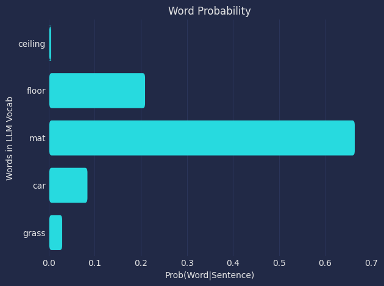
From the softmax probabilities we see that the most probable word is: mat with a probability of : 0.666
Temperature: 100.0
By Hand:
\(\displaystyle \begin{align} \text{Given:} \\ x &= [-49.82, -46.4, -45.25, -47.3, -48.32] \\ \color{red}T &= 100.0 \\ \\ \\ \text{Softmax}(x_{i=1:5},{\color{red}T}) &= \frac{\color{steelblue}{ e^{\frac{x_i}{ \color{red}{T} }} } } {\color{purple}{ \sum_{j=1}^{N}{ e^{\frac{x_j}{ \color{red}{T} }} } } } \\ \\ \\ \text{The numerator:} \\ \color{steelblue}e^{x_i/\color{red}T} &= \left[\color{steelblue}{e^{x_1/\color{red}T}}, \color{steelblue}{e^{x_2/\color{red}T}}, \color{steelblue}{e^{x_3/\color{red}T}}, \color{steelblue}{e^{x_4/\color{red}T}}, \color{steelblue}{e^{x_5/\color{red}T}}\color{None}\right] \\ \color{steelblue}e^{x_i/\color{red}T} &= \left[\color{steelblue}{e^{-49.82/\color{red}T}}, \color{steelblue}{e^{-46.4/\color{red}T}}, \color{steelblue}{e^{-45.25/\color{red}T}}, \color{steelblue}{e^{-47.3/\color{red}T}}, \color{steelblue}{e^{-48.32/\color{red}T}}\color{None}\right] \\ \color{steelblue}e^{x_i/\color{red}100.0} &= \left[\color{steelblue}{e^{-49.82/\color{red}100.0}}, \color{steelblue}{e^{-46.4/\color{red}100.0}}, \color{steelblue}{e^{-45.25/\color{red}100.0}}, \color{steelblue}{e^{-47.3/\color{red}100.0}}, \color{steelblue}{e^{-48.32/\color{red}100.0}}\color{None}\right] \\ \color{steelblue}e^{x_i/\color{red}100.0} &= \left[\color{steelblue}{e^{{-0.4982}}}, \color{steelblue}{e^{{-0.464}}}, \color{steelblue}{e^{{-0.4525}}}, \color{steelblue}{e^{{-0.473}}}, \color{steelblue}{e^{{-0.4832}}}\color{None}\right] \\ \color{steelblue}e^{x_i/\color{red}100.0} &= \left[\color{steelblue}{0.6076}, \color{steelblue}{0.6288}, \color{steelblue}{0.636}, \color{steelblue}{0.6231}, \color{steelblue}{0.6168}\color{None}\right] \\ \\ \text{The denominator:} \\ \color{purple}\sum_{j=1}^{N=5} e^{x_j/\color{red}T} &= \color{purple}{e^{x_1/\color{red}T}} + \color{purple}{e^{x_2/\color{red}T}} + \color{purple}{e^{x_3/\color{red}T}} + \color{purple}{e^{x_4/\color{red}T}} + \color{purple}{e^{x_5/\color{red}T}} \\ \color{purple}\sum_{j=1}^{N=5} e^{x_j/\color{red}T} &= \color{purple}{e^{-49.82/\color{red}T}} + \color{purple}{e^{-46.4/\color{red}T}} + \color{purple}{e^{-45.25/\color{red}T}} + \color{purple}{e^{-47.3/\color{red}T}} + \color{purple}{e^{-48.32/\color{red}T}} \\ \color{purple}\sum_{j=1}^{N=5} e^{x_j/\color{red}100.0} &= \color{purple}{e^{-49.82/\color{red}100.0}} + \color{purple}{e^{-46.4/\color{red}100.0}} + \color{purple}{e^{-45.25/\color{red}100.0}} + \color{purple}{e^{-47.3/\color{red}100.0}} + \color{purple}{e^{-48.32/\color{red}100.0}} \\ \color{purple}\sum_{j=1}^{N=5} e^{x_j/\color{red}100.0} &= \color{purple}{e^{{-0.4982}}} + \color{purple}{e^{{-0.464}}} + \color{purple}{e^{{-0.4525}}} + \color{purple}{e^{{-0.473}}} + \color{purple}{e^{{-0.4832}}} \\ \color{purple}\sum_{j=1}^{N=5} e^{x_j/\color{red}100.0} &= \color{purple}{0.6076} + \color{purple}{0.6288} + \color{purple}{0.636} + \color{purple}{0.6231} + \color{purple}{0.6168} \\ \color{purple}\sum_{j=1}^{N=5} e^{x_j/\color{red}100.0} &= \color{purple}3.112 \\ \\ \\ \text{Combine all:} \\ \text{Softmax}(x_{i=1:5},{\color{red}T}) &= \left[\frac{\color{steelblue}e^{x_1/\color{red}T} } { \color{purple} e^{x_1/\color{red}T} + e^{x_2/\color{red}T} + e^{x_3/\color{red}T} + e^{x_4/\color{red}T} + e^{x_5/\color{red}T} }, \frac{\color{steelblue}e^{x_2/\color{red}T} } { \color{purple} e^{x_1/\color{red}T} + e^{x_2/\color{red}T} + e^{x_3/\color{red}T} + e^{x_4/\color{red}T} + e^{x_5/\color{red}T} }, \frac{\color{steelblue}e^{x_3/\color{red}T} } { \color{purple} e^{x_1/\color{red}T} + e^{x_2/\color{red}T} + e^{x_3/\color{red}T} + e^{x_4/\color{red}T} + e^{x_5/\color{red}T} }, \frac{\color{steelblue}e^{x_4/\color{red}T} } { \color{purple} e^{x_1/\color{red}T} + e^{x_2/\color{red}T} + e^{x_3/\color{red}T} + e^{x_4/\color{red}T} + e^{x_5/\color{red}T} }, \frac{\color{steelblue}e^{x_5/\color{red}T} } { \color{purple} e^{x_1/\color{red}T} + e^{x_2/\color{red}T} + e^{x_3/\color{red}T} + e^{x_4/\color{red}T} + e^{x_5/\color{red}T} }\right] \\\\ \text{Softmax}(x, {\color{red}T}) &= \left[\frac{\color{steelblue}e^{-49.82/\color{red}T}} { \color{purple} e^{-49.82/\color{red}T} + e^{-46.4/\color{red}T} + e^{-45.25/\color{red}T} + e^{-47.3/\color{red}T} + e^{-48.32/\color{red}T} }, \frac{\color{steelblue}e^{-46.4/\color{red}T}} { \color{purple} e^{-49.82/\color{red}T} + e^{-46.4/\color{red}T} + e^{-45.25/\color{red}T} + e^{-47.3/\color{red}T} + e^{-48.32/\color{red}T} }, \frac{\color{steelblue}e^{-45.25/\color{red}T}} { \color{purple} e^{-49.82/\color{red}T} + e^{-46.4/\color{red}T} + e^{-45.25/\color{red}T} + e^{-47.3/\color{red}T} + e^{-48.32/\color{red}T} }, \frac{\color{steelblue}e^{-47.3/\color{red}T}} { \color{purple} e^{-49.82/\color{red}T} + e^{-46.4/\color{red}T} + e^{-45.25/\color{red}T} + e^{-47.3/\color{red}T} + e^{-48.32/\color{red}T} }, \frac{\color{steelblue}e^{-48.32/\color{red}T}} { \color{purple} e^{-49.82/\color{red}T} + e^{-46.4/\color{red}T} + e^{-45.25/\color{red}T} + e^{-47.3/\color{red}T} + e^{-48.32/\color{red}T} }\right] \\ \\ \text{softmax}(x, {\color{red}100.0}) &= \left[\frac{ \color{steelblue} e^{-49.82/\color{red}100.0}} { \color{purple} e^{-49.82/\color{red}100.0} + e^{-46.4/\color{red}100.0} + e^{-45.25/\color{red}100.0} + e^{-47.3/\color{red}100.0} + e^{-48.32/\color{red}100.0} }, \frac{ \color{steelblue} e^{-46.4/\color{red}100.0}} { \color{purple} e^{-49.82/\color{red}100.0} + e^{-46.4/\color{red}100.0} + e^{-45.25/\color{red}100.0} + e^{-47.3/\color{red}100.0} + e^{-48.32/\color{red}100.0} }, \frac{ \color{steelblue} e^{-45.25/\color{red}100.0}} { \color{purple} e^{-49.82/\color{red}100.0} + e^{-46.4/\color{red}100.0} + e^{-45.25/\color{red}100.0} + e^{-47.3/\color{red}100.0} + e^{-48.32/\color{red}100.0} }, \frac{ \color{steelblue} e^{-47.3/\color{red}100.0}} { \color{purple} e^{-49.82/\color{red}100.0} + e^{-46.4/\color{red}100.0} + e^{-45.25/\color{red}100.0} + e^{-47.3/\color{red}100.0} + e^{-48.32/\color{red}100.0} }, \frac{ \color{steelblue} e^{-48.32/\color{red}100.0}} { \color{purple} e^{-49.82/\color{red}100.0} + e^{-46.4/\color{red}100.0} + e^{-45.25/\color{red}100.0} + e^{-47.3/\color{red}100.0} + e^{-48.32/\color{red}100.0} }\right] \\ \\ \text{softmax}(x, {\color{red}100.0}) &= \left[\frac{ \color{steelblue} e^{ -0.4982 }} { \color{purple} e^{-0.4982 } + e^{-0.464 } + e^{-0.4525 } + e^{-0.473 } + e^{-0.4832 } }, \frac{ \color{steelblue} e^{ -0.464 }} { \color{purple} e^{-0.4982 } + e^{-0.464 } + e^{-0.4525 } + e^{-0.473 } + e^{-0.4832 } }, \frac{ \color{steelblue} e^{ -0.4525 }} { \color{purple} e^{-0.4982 } + e^{-0.464 } + e^{-0.4525 } + e^{-0.473 } + e^{-0.4832 } }, \frac{ \color{steelblue} e^{ -0.473 }} { \color{purple} e^{-0.4982 } + e^{-0.464 } + e^{-0.4525 } + e^{-0.473 } + e^{-0.4832 } }, \frac{ \color{steelblue} e^{ -0.4832 }} { \color{purple} e^{-0.4982 } + e^{-0.464 } + e^{-0.4525 } + e^{-0.473 } + e^{-0.4832 } }\right] \\ \\ \text{softmax}(x, {\color{red}100.0}) &= \left[\frac{ \color{steelblue} { 0.6076 } } { \color{purple} 0.6076 + 0.6288 + 0.636 + 0.6231 + 0.6168 }, \frac{ \color{steelblue} { 0.6288 } } { \color{purple} 0.6076 + 0.6288 + 0.636 + 0.6231 + 0.6168 }, \frac{ \color{steelblue} { 0.636 } } { \color{purple} 0.6076 + 0.6288 + 0.636 + 0.6231 + 0.6168 }, \frac{ \color{steelblue} { 0.6231 } } { \color{purple} 0.6076 + 0.6288 + 0.636 + 0.6231 + 0.6168 }, \frac{ \color{steelblue} { 0.6168 } } { \color{purple} 0.6076 + 0.6288 + 0.636 + 0.6231 + 0.6168 }\right] \\ \\ \text{softmax}(x, {\color{red}100.0}) &= \left[\frac{ \color{steelblue}{ 0.6076 } } { \color{purple} 3.112 }, \frac{ \color{steelblue}{ 0.6288 } } { \color{purple} 3.112 }, \frac{ \color{steelblue}{ 0.636 } } { \color{purple} 3.112 }, \frac{ \color{steelblue}{ 0.6231 } } { \color{purple} 3.112 }, \frac{ \color{steelblue}{ 0.6168 } } { \color{purple} 3.112 }\right] \\ \\ \\ \text{softmax}(x, {\color{red}100.0})&= [0.1952, 0.202, 0.2044, 0.2002, 0.1982] \ \\ \text{Probabilities}&= [0.1952, 0.202, 0.2044, 0.2002, 0.1982] \end{align}\)
Using Python:
Code
# Example Softmax Calculation
# Assume for simplicity:
# * The model only knows the 5 words listed below (it has a vocabulary of 5).
import pandas as pd
import seaborn as sns
#Example model output
model_output_vals = {"word_index":[i for i in range(5)],
"words":["ceiling", "floor", "mat", "car", "grass"],
"logits":[-49.82, -46.40, -45.25, -47.30, -48.32]}
temp = 100.0
#Convert the data to a DataFrame
model_output = pd.DataFrame(model_output_vals)
#Define a softmax function with temperature
def my_softmax(input_vector, Temp=1.0):
e = np.exp(np.divide(input_vector,Temp))
return e / e.sum()
#Calculate the probabilities
probs = my_softmax(model_output["logits"], Temp=temp)
model_output["softmax_prob"] = probs
#Select the most probable word
most_prob = np.argmax(probs)
print(f"\nThe index of the most probable word is: {most_prob}")
#Pull out the most probable word
print(f"\nThe most probable word is: { model_output['words'][most_prob] }" \
f" (Prob: {model_output['softmax_prob'][most_prob]:.5f})")
#Style our table
cm = sns.light_palette("orange", as_cmap=True)
s1 = model_output
s1 = s1.style.background_gradient(subset=["logits"],cmap=cm)
cm = sns.light_palette("green", as_cmap=True)
s1.background_gradient(subset=["softmax_prob"],cmap=cm)
The index of the most probable word is: 2
The most probable word is: mat (Prob: 0.20436)| word_index | words | logits | softmax_prob | |
|---|---|---|---|---|
| 0 | 0 | ceiling | -49.820000 | 0.195229 |
| 1 | 1 | floor | -46.400000 | 0.202022 |
| 2 | 2 | mat | -45.250000 | 0.204358 |
| 3 | 3 | car | -47.300000 | 0.200211 |
| 4 | 4 | grass | -48.320000 | 0.198180 |
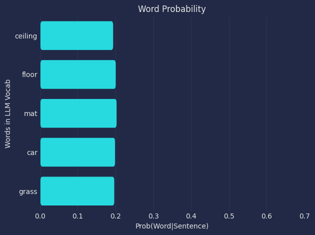
From the softmax probabilities we see that the most probable word is: mat with a probability of : 0.666
What does this mean?
Between the temperature values of 1.0 and 100.0 we see that the probability distribution goes from being more ‘peaky’ to more ‘flat’ or uniform. This means that words that would have a low chance of being chosen when the temperature is low would now have a higher chance of being chosen.
Since we’re using greedy sampling, the word with the highest probability always gets select, but if we change our method to randomly pick a word from the top 3 probabilites, the possible choices become: [‘mat’ ‘floor’ ‘car’]
LLM with Temperature Applied
To see how the temperature parameter affects the LLM outputs we’ll use the GPT-2 model by OpenAI for text generation. The GPT-2 model is a fairly small, open sourced model that can be accessed and used via Hugging Face.
GPT-2 has:
1.5 billion parameters
50257 vocabulary size (number of words it knows)
768 vector embedding size
12 attention heads
12 layers
We’ll look at using the LLM for two types of task:
- Single next word generation
- Continuous next word generation
Model Set up
To get the model(gpt2) we download it from Hugging Face and set the model’s task to text-generation
from transformers import AutoModelForCausalLM, AutoTokenizer
model_to_load = "openai-community/gpt2"
model_to_load_task = "text-generation"
# Load the model's pretrained tokenizer
tokenizer = AutoTokenizer.from_pretrained(model_to_load)
# Load the pretrained model
model = AutoModelForCausalLM.from_pretrained(
model_to_load,
device_map = device, #CPU or GPU
torch_dtype = "auto",
trust_remote_code = True
)To pass inputs to the model we can run the following
# Input sentence
prompt = "The cat sat on the"
# Tokenize/encode input prompt
input_ids = tokenizer.encode(prompt, return_tensors="pt")
# Generate the output with adjusted temperature
outputs = model.generate(input_ids,
max_new_tokens=1, #Just want one word generated
temperature=temperature, #Set temp
output_scores=True, #Output model word scores
output_logits=True, #Outout logits
return_dict_in_generate=True,
do_sample=True, #Perform sampling for next word
pad_token_id=tokenizer.eos_token_id)
# Get the generated token ID/next word
generated_token_id = outputs.sequences[0][-1].item()
# Decode the generated token ID to a word
generated_word = tokenizer.decode([generated_token_id])/usr/local/lib/python3.11/dist-packages/transformers/tokenization_utils_base.py:1601: FutureWarning: `clean_up_tokenization_spaces` was not set. It will be set to `True` by default. This behavior will be depracted in transformers v4.45, and will be then set to `False` by default. For more details check this issue: https://github.com/huggingface/transformers/issues/31884
warnings.warn(Single next word generation
With single next word generation the model is given a sentence and is tasked with predicting the next most likely word.
For example: We’ll pass the same sentence we’ve been looking at to the LLM to see what it will output.
- Input sentence: The cat slept on the ______.
prompt = "The cat slept on the"
temps = [0.1, 0.5, 1., 5., 10., 100.]
for ii in temps:
word_out = next_word_prediction(prompt, temp=ii)
print(f"LLM Temperature: {ii} \n {prompt} {word_out}")Here we pass the same input sentence to the LLM with different temperature values and look at the probability distribution of select words in the model’s vocabulary.
Generated word: floor ( token index: 4314, logit:-82.82, prob: 0.9891 )
Generated word: top ( token index: 1353, logit:-85.89, prob: 0.0012 )
Generated word: bed ( token index: 3996, logit:-83.61, prob: 0.0857 )
Generated word: rug ( token index: 14477, logit:-87.13, prob: 0.0002 )
Generated word: back ( token index: 736, logit:-85.49, prob: 0.0001 )
Generated word: right ( token index: 826, logit:-87.17, prob: 0.0000 )LLM Temperature: 0.1
Input : The cat slept on the
Output: The cat slept on the floor
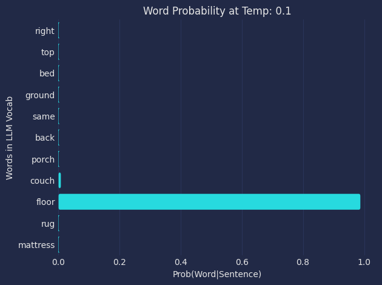
LLM Temperature: 0.5
Input : The cat slept on the
Output: The cat slept on the top
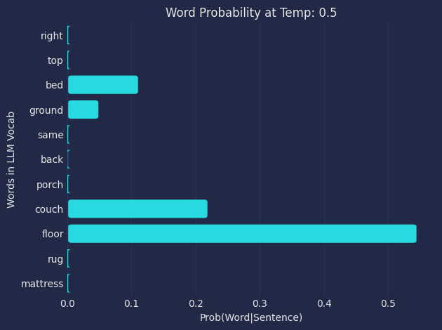
LLM Temperature: 1.0
Input : The cat slept on the
Output: The cat slept on the bed
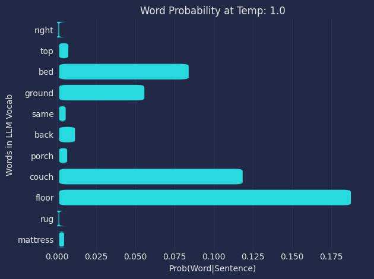
LLM Temperature: 5.0
Input : The cat slept on the
Output: The cat slept on the rug
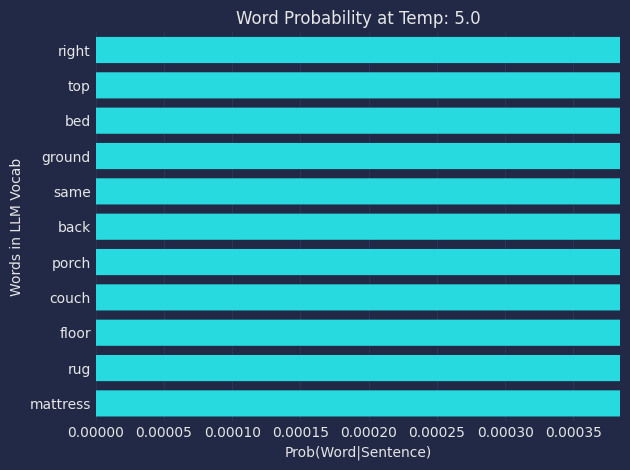
LLM Temperature: 10.0
Input : The cat slept on the
Output: The cat slept on the back
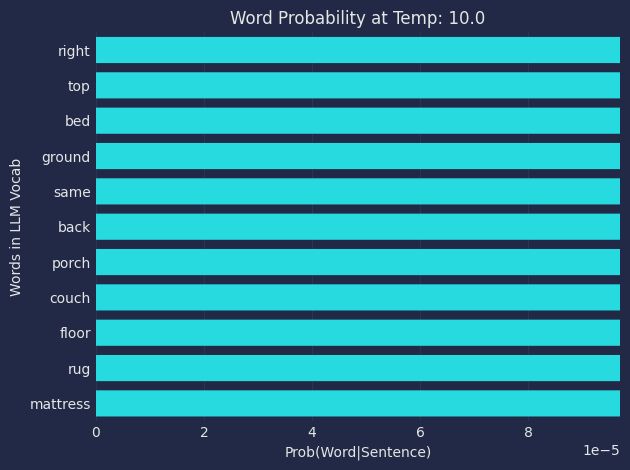
LLM Temperature: 100.0
Input : The cat slept on the
Output: The cat slept on the right
What does this mean?
As the temperature increases from 0.1 to 100.0 the output words that were generated, generally all seem plausible.
Looking at the distribution of words we see that going from 0.1 to 100.0 the distribution goes from being very “peaky” around the most likely word to flat across all words.
This demonstrates how the temperature parameter affects the probability distribution of words from the LLM’s vocabulary so that some are more or less likely to be selected as the next generated word in a sequence.
Continuous next word generation
With continuous next word generation the model is given a sentence and is tasked with predicting the next most likely word in an autoregressive manner. The predicted word is added to the sentence and passed for the next iteration of prediction unit an end of sentence token (<EOS> or \n) is generated or the max number of iterations is reached.
We’ll pass the same sentence we’ve been looking at to the LLM to see what it will output over a number of iterations like below.
- Input sentence: The cat slept on the ______
- 1: The cat slept on the floor ______
- 2: The cat slept on the floor next ______
- 3: The cat slept on the floor next to ______
- 4: The cat slept on the floor next to the ______
- 5: The cat slept on the floor next to the window ______
- 6: The cat slept on the floor next to the window . ______
- 7: The cat slept on the floor next to the window . < EOS >
We’ll pass the prompt to the LLM and append its predicted output (word_out) to the prompt and keep iterating until we reach the max number of iterations (max_gen_iteration) or and end of sentence token (<EOS> or \n) is predicted.
prompt = "The cat slept on the"
temp = 0.5
max_gen_iteration = 15
for ii in range(max_gen_iteration):
word_out, probs_out = next_word_prediction(prompt, temp=temp)
print(prompt + word_out)
prompt += word_outHere we pass the same input sentence to the LLM with different temperature values and look at the probability distribution of select words in the model’s vocabulary.
Temp: 0.5
Parameters:
- Input text: “The cat slept on the”
- Temperature: 0.5
- Max iterations: 20
Code
prompt = "The cat slept on the"
temp = 0.5
max_iter = 20
gen_next_word_loop(prompt, temp = temp, max_iter = max_iter)The cat slept on the floor
The cat slept on the floor of
The cat slept on the floor of the
The cat slept on the floor of the cabin
The cat slept on the floor of the cabin for
The cat slept on the floor of the cabin for a
The cat slept on the floor of the cabin for a few
The cat slept on the floor of the cabin for a few hours
The cat slept on the floor of the cabin for a few hours before
The cat slept on the floor of the cabin for a few hours before it
The cat slept on the floor of the cabin for a few hours before it was
The cat slept on the floor of the cabin for a few hours before it was taken
The cat slept on the floor of the cabin for a few hours before it was taken to
The cat slept on the floor of the cabin for a few hours before it was taken to the
The cat slept on the floor of the cabin for a few hours before it was taken to the shelter
The cat slept on the floor of the cabin for a few hours before it was taken to the shelter.
The cat slept on the floor of the cabin for a few hours before it was taken to the shelter.
Temp: 2.0
Parameters:
- Input text: “The cat slept on the”
- Temperature: 2.0
- Max iterations: 20
Code
prompt = "The cat slept on the"
temp = 2.0
max_iter = 20
gen_next_word_loop(prompt, temp = temp, max_iter = max_iter)The cat slept on the inside
The cat slept on the inside,
The cat slept on the inside, trying
The cat slept on the inside, trying the
The cat slept on the inside, trying the inside
The cat slept on the inside, trying the inside-
The cat slept on the inside, trying the inside-out
The cat slept on the inside, trying the inside-out of
The cat slept on the inside, trying the inside-out of these
The cat slept on the inside, trying the inside-out of these chairs
The cat slept on the inside, trying the inside-out of these chairs.
The cat slept on the inside, trying the inside-out of these chairs. She
The cat slept on the inside, trying the inside-out of these chairs. She was
The cat slept on the inside, trying the inside-out of these chairs. She was being
The cat slept on the inside, trying the inside-out of these chairs. She was being fed
The cat slept on the inside, trying the inside-out of these chairs. She was being fed from
The cat slept on the inside, trying the inside-out of these chairs. She was being fed from one
The cat slept on the inside, trying the inside-out of these chairs. She was being fed from one,
The cat slept on the inside, trying the inside-out of these chairs. She was being fed from one, her
The cat slept on the inside, trying the inside-out of these chairs. She was being fed from one, her two
Temp: 10.0
Parameters:
- Input text: “The cat slept on the”
- Temperature: 10.0
- Max iterations: 20
Code
prompt = "The cat slept on the"
temp = 10.0
max_iter = 20
gen_next_word_loop(prompt, temp = temp, max_iter = max_iter)The cat slept on the left
The cat slept on the left one
The cat slept on the left one piece
The cat slept on the left one piece side
The cat slept on the left one piece side at
The cat slept on the left one piece side at day
The cat slept on the left one piece side at day one
The cat slept on the left one piece side at day one!
The cat slept on the left one piece side at day one! [
The cat slept on the left one piece side at day one! [laughs
The cat slept on the left one piece side at day one! [laughs about
The cat slept on the left one piece side at day one! [laughs about how
The cat slept on the left one piece side at day one! [laughs about how long
The cat slept on the left one piece side at day one! [laughs about how long they
The cat slept on the left one piece side at day one! [laughs about how long they both
The cat slept on the left one piece side at day one! [laughs about how long they both would
The cat slept on the left one piece side at day one! [laughs about how long they both would lie
The cat slept on the left one piece side at day one! [laughs about how long they both would lie still
The cat slept on the left one piece side at day one! [laughs about how long they both would lie still at
The cat slept on the left one piece side at day one! [laughs about how long they both would lie still at sunrise
What does this mean?
If we look at the outputs between a temperature of 0.5 vs 10.0, we see that at a temperature of 0.5 the output text is more coherent whereas for a temperature of 10.0 the output is more incoherent and does not make sense to a human reader.
This demonstrates how the temperature parameter can influence the next generated word by adjusting the probability distribution of words within the LLM’s vocabulary.
CURRENT WORK
[DYNAMIC TEMPERATURE ]
Generated word: porch ( token index: 33179, logit:-85.97, prob: 0.0000 )
{'words': ['porch', 'same', 'bed', 'back', 'couch', 'ground', 'floor', 'right', 'mattress'], 'probs': [2.0423095e-05, 2.0417958e-05, 2.0519803e-05, 2.044276e-05, 2.0533693e-05, 2.0503358e-05, 2.0552357e-05, 2.0374422e-05, 2.0411651e-05]}
Generated word: top ( token index: 1353, logit:-85.89, prob: 0.0000 )
{'words': ['porch', 'same', 'bed', 'back', 'couch', 'ground', 'floor', 'right', 'mattress'], 'probs': [2.0423095e-05, 2.0417958e-05, 2.0519803e-05, 2.044276e-05, 2.0533693e-05, 2.0503358e-05, 2.0552357e-05, 2.0374422e-05, 2.0411651e-05]}
Generated word: ceiling ( token index: 13387, logit:-87.47, prob: 0.0000 )
{'words': ['porch', 'same', 'bed', 'back', 'couch', 'ground', 'floor', 'right', 'mattress'], 'probs': [2.0423095e-05, 2.0417958e-05, 2.0519803e-05, 2.044276e-05, 2.0533693e-05, 2.0503358e-05, 2.0552357e-05, 2.0374422e-05, 2.0411651e-05]}
Generated word: living ( token index: 2877, logit:-87.32, prob: 0.0000 )
{'words': ['porch', 'same', 'bed', 'back', 'couch', 'ground', 'floor', 'right', 'mattress'], 'probs': [2.0423095e-05, 2.0417958e-05, 2.0519803e-05, 2.044276e-05, 2.0533693e-05, 2.0503358e-05, 2.0552357e-05, 2.0374422e-05, 2.0411651e-05]}
Generated word: back ( token index: 736, logit:-85.49, prob: 0.0000 )
{'words': ['porch', 'same', 'bed', 'back', 'couch', 'ground', 'floor', 'right', 'mattress'], 'probs': [2.0423095e-05, 2.0417958e-05, 2.0519803e-05, 2.044276e-05, 2.0533693e-05, 2.0503358e-05, 2.0552357e-05, 2.0374422e-05, 2.0411651e-05]}
Generated word: right ( token index: 826, logit:-87.17, prob: 0.0000 )
{'words': ['porch', 'same', 'bed', 'back', 'couch', 'ground', 'floor', 'right', 'mattress'], 'probs': [2.0423095e-05, 2.0417958e-05, 2.0519803e-05, 2.044276e-05, 2.0533693e-05, 2.0503358e-05, 2.0552357e-05, 2.0374422e-05, 2.0411651e-05]}LLM Temperature: 500.0
Input : The cat slept on the
Output: The cat slept on the porch
LLM Temperature: 500.0
Input : The cat slept on the
Output: The cat slept on the top
LLM Temperature: 500.0
Input : The cat slept on the
Output: The cat slept on the ceiling
LLM Temperature: 500.0
Input : The cat slept on the
Output: The cat slept on the living
LLM Temperature: 500.0
Input : The cat slept on the
Output: The cat slept on the back
LLM Temperature: 500.0
Input : The cat slept on the
Output: The cat slept on the right
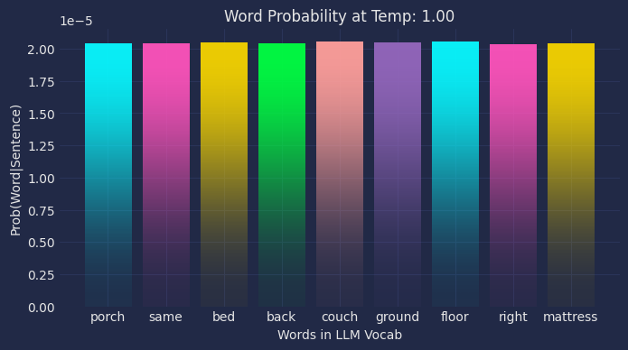
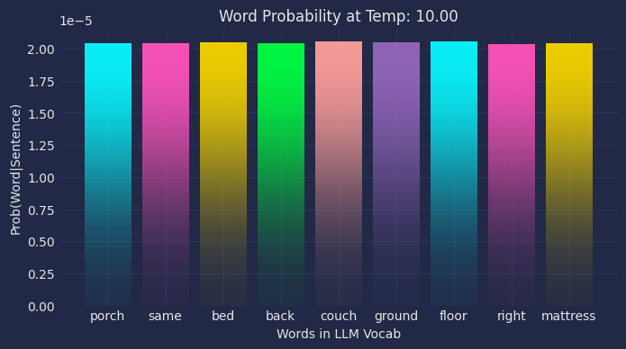
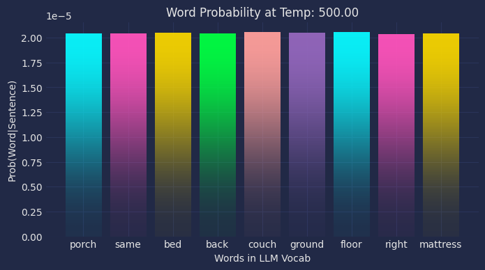
This is a test to display 12\[\Sigma\]
Hello World
Code
from IPython.display import display_markdown
display_markdown('''## heading
- ordered
- list
The table below:
| id |value|
|:---|----:|
| a | 1 |
| b | 2 |
''', raw=True)heading
- ordered
- list
The table below:
| id | value |
|---|---|
| a | 1 |
| b | 2 |
Code
from matplotlib.patches import FancyBboxPatch
import seaborn as sns
def my_func(x, y):
plt.figure()
# plt.subplots(figsize=(5, 2))
sns.set_color_codes("pastel")
ax = sns.barplot(y = y,
x = x,
orient = "h",
joinstyle='bevel')
new_patches = []
for patch in reversed(ax.patches):
bb = patch.get_bbox()
color = patch.get_facecolor()
p_bbox = FancyBboxPatch((bb.xmin, bb.ymin),
abs(bb.width), abs(bb.height),
boxstyle="round,pad=-0.00150,rounding_size=0.005",
ec="none", fc=color,
mutation_aspect=20
)
patch.remove()
new_patches.append(p_bbox)
for patch in new_patches:
ax.add_patch(patch)
sns.despine(left=True, bottom=True)
ax.tick_params(axis=u'both', which=u'both', length=0)
plt.tight_layout()
plt.show()
my_func(x = model_output["softmax_prob"], y = model_output["words"]) 
Code
from matplotlib.patches import FancyBboxPatch
# plt.subplots(figsize=(5, 2))
sns.set_color_codes("pastel")
ax = sns.barplot(y = model_output.words,
x = model_output.softmax_prob,
orient = "h",
joinstyle='bevel')
new_patches = []
for patch in reversed(ax.patches):
bb = patch.get_bbox()
color = patch.get_facecolor()
p_bbox = FancyBboxPatch((bb.xmin, bb.ymin),
abs(bb.width), abs(bb.height),
boxstyle="round,pad=-0.00150,rounding_size=0.005",
ec="none", fc=color,
mutation_aspect=20
)
patch.remove()
new_patches.append(p_bbox)
for patch in new_patches:
ax.add_patch(patch)
sns.despine(left=True, bottom=True)
ax.tick_params(axis=u'both', which=u'both', length=0)
plt.tight_layout()
plt.show()
# # joinstyle='bevel',
# new_patches = []
# for patch in reversed(ax.patches):
# # print(bb.xmin, bb.ymin,abs(bb.width), abs(bb.height))
# bb = patch.get_bbox()
# color = patch.get_facecolor()
# p_bbox = FancyBboxPatch((bb.xmin, bb.ymin),
# abs(bb.width), abs(bb.height),
# boxstyle="round,pad=-0.05,rounding_size=2",
# ec="none", fc=color,
# mutation_aspect=0.1
# )
# patch.remove()
# new_patches.append(p_bbox)
# for patch in new_patches:
# ax.add_patch(patch)
# sns.despine(left=True, bottom=True)
# ax.tick_params(axis=u'both', which=u'both', length=0)
# plt.tight_layout()
# # plt.savefig("data.png", bbox_inches="tight")
# plt.show()
# #Plot the outcomes
# fig, ax = plt.subplots()
# bars = ax.barh(model_output.words[::-1],
# model_output.softmax_prob[::-1])
# # bars = plt.barh(model_output.words[::-1],
# # model_output.softmax_prob[::-1])
# # Function to create rounded bars
# def round_bar(x, y, width, height, color):
# bbox = FancyBboxPatch((x, y), width, height,
# boxstyle="round,pad=0.1",
# edgecolor='black',
# facecolor=color)
# return bbox
# # Replace bars with rounded bars
# for bar in bars:
# bbox = round_bar(bar.get_x(), bar.get_y(), bar.get_width(), bar.get_height(), bar.get_facecolor())
# ax.add_patch(bbox)
# bar.set_visible(False)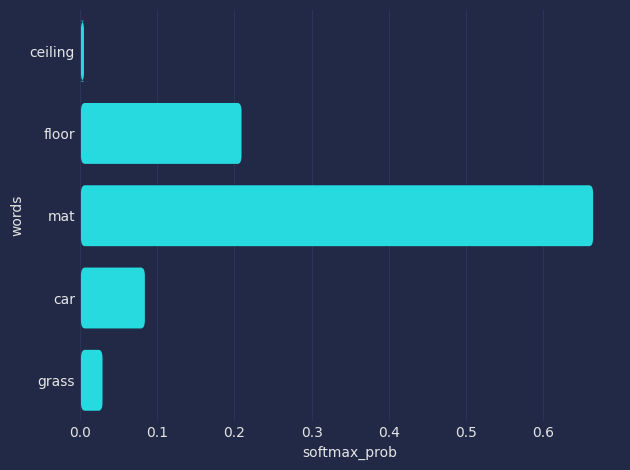
The Softmax Function
Example - Temperature Calculation
Examples or Varying Temperature
Let’s dive in with some examples.
To see how the temperature parameter affects the LLM outputs we’ll use the GPT-2 model by OpenAI for text generation. The GPT-2 model is a fairly small, open sourced model that can be accessed and used via Hugging Face.
GPT-2 has:
1.5 billion parameters
50257 vocabulary size (number of words it knows)
768 vector embedding size
12 attention heads
12 layers
Examples 1 - Next word generation
Suppose we’re given a sentence; how does temperature affect the next predicted word?
Sentence: The cat slept on the ______.
Example 2- Continuous word generation
How does temperature affect the output of continuous next word generation?
Temp: 0.25
Sentence: The cat slept on the ______.
Sentence: The cat slept on the floor ______.
Sentence: The cat slept on the floor at ______.
Sentence: The cat slept on the floor at night ______.
Temp: 0.5 Sentence: The cat slept on the ______. Sentence: The cat slept on the floor ______. Sentence: The cat slept on the floor at ______. Sentence: The cat slept on the floor at night ______.
Temp: 2.0 Sentence: The cat slept on the ______. Sentence: The cat slept on the floor ______. Sentence: The cat slept on the floor at ______. Sentence: The cat slept on the floor at night ______.
Temp: 3.0 Sentence: The cat slept on the ______. Sentence: The cat slept on the floor ______. Sentence: The cat slept on the floor at ______. Sentence: The cat slept on the floor at night ______.
LLM Recap
LLMs work as next word prediction machines, given some input (over simplified). Those next word predictions come from a probability distribution of all the words that the model knows (its vocabulary). Layers within the transformer architecture (the structure that makes LLMs) produce logits, which are transformed to a probability distribution using a softmax function.
The Softmax function
The softmax function is a widely used mathematical transformation that takes a set of values and transforms them into a set of probabilities that sum to 1.
Code
model_output.words[::-1]4 grass
3 car
2 mat
1 floor
0 ceiling
Name: words, dtype: objectCode
model_output["words"][2]'mat'Code
vect = [1, 3, 2]
e = np.exp(vect)
print(e)
print(e.sum())
print(my_softmax(vect))[ 2.71828183 20.08553692 7.3890561 ]
30.19287485057736
[0.09003057 0.66524096 0.24472847]Code
import torch
torch.cuda.device_count()
# print(torch.cuda.get_device_name())
# Check if a GPU is available
if torch.cuda.is_available():
# Set the device to the first GPU (index 0)
device = torch.device("cuda:1")
else:
device = torch.device("cpu")Code
import torch
def list_cuda_devices():
if torch.cuda.is_available():
num_devices = torch.cuda.device_count()
print("Number of CUDA devices:", num_devices)
for i in range(num_devices):
device_name = torch.cuda.get_device_name(i)
print(f"Device {i}: {device_name}")
else:
print("No CUDA devices found.")
list_cuda_devices()Number of CUDA devices: 3
Device 0: Quadro RTX 4000
Device 1: Quadro M4000
Device 2: Quadro P1000Code
try:
from google.colab import userdata
def get_api_key(key_name):
return userdata.get(key_name)
except:
from dotenv import load_dotenv, dotenv_values
load_dotenv()
def get_api_key(key_name):
return os.environ.get(key_name)Code
#Download the model
from transformers import AutoModelForCausalLM, AutoTokenizer, pipeline
model_to_load = "openai-community/gpt2" #"microsoft/Phi-3-mini-4k-instruct"
model_to_load_task = "text-generation"
#Load the model's pretrained tokenizer
tokenizer = AutoTokenizer.from_pretrained(model_to_load)
#Load the pretrained model
model = AutoModelForCausalLM.from_pretrained(
model_to_load,
device_map = "cuda:1",
torch_dtype = "auto",
trust_remote_code = True
)
# Enable gradient checkpointing
model.gradient_checkpointing_enable()2024-10-28 21:18:06.097403: I tensorflow/core/util/port.cc:153] oneDNN custom operations are on. You may see slightly different numerical results due to floating-point round-off errors from different computation orders. To turn them off, set the environment variable `TF_ENABLE_ONEDNN_OPTS=0`.
2024-10-28 21:18:06.113531: E external/local_xla/xla/stream_executor/cuda/cuda_fft.cc:485] Unable to register cuFFT factory: Attempting to register factory for plugin cuFFT when one has already been registered
2024-10-28 21:18:06.133300: E external/local_xla/xla/stream_executor/cuda/cuda_dnn.cc:8454] Unable to register cuDNN factory: Attempting to register factory for plugin cuDNN when one has already been registered
2024-10-28 21:18:06.141213: E external/local_xla/xla/stream_executor/cuda/cuda_blas.cc:1452] Unable to register cuBLAS factory: Attempting to register factory for plugin cuBLAS when one has already been registered
2024-10-28 21:18:06.156320: I tensorflow/core/platform/cpu_feature_guard.cc:210] This TensorFlow binary is optimized to use available CPU instructions in performance-critical operations.
To enable the following instructions: AVX2 AVX512F AVX512_VNNI FMA, in other operations, rebuild TensorFlow with the appropriate compiler flags.
/usr/local/lib/python3.11/dist-packages/transformers/tokenization_utils_base.py:1601: FutureWarning: `clean_up_tokenization_spaces` was not set. It will be set to `True` by default. This behavior will be depracted in transformers v4.45, and will be then set to `False` by default. For more details check this issue: https://github.com/huggingface/transformers/issues/31884
warnings.warn(Code
torch.manual_seed(0)
import plotly.graph_objects as go
import plotly.io as pio
pio.renderers.default = "notebook"
import seaborn as sns
import matplotlib.pyplot as plt
try:
import mplcyberpunk
except:
%pip install mplcyberpunk
import mplcyberpunk
def plot_bar_chart(words, probs, temp=None):
"""
Plots a bar chart of words and their probabilities
"""
# Extract the values for Plotly
words = words
probs = probs
colors = [f"C{i}" for i in range(len(words))]
plot_params = {
'xlabel': 'Words in LLM Vocab',
'ylabel': 'Prob(Word|Sentence)',
'title': f"Word Probability at Temp: {temp:.2f}"}
# plt.figure(figsize=(4,2))
plt.style.use('cyberpunk')
fig, ax = plt.subplots(figsize=(8,4))
bars = ax.bar(words, probs, color=colors, zorder=2)
mplcyberpunk.add_bar_gradient(bars=bars)
ax.set(**plot_params)
plt.show()
def next_word_prediction(prompt: str, temp=0.5,
output_bar_chart=False,
output_probs=False,
words_to_plot=None):
"""
Extracts next word prediction from the defined LLM
"""
# Tokenize/encode input prompt
input_ids = tokenizer.encode(prompt, return_tensors="pt")
# Pass to GPU
input_ids = input_ids.to("cuda:1")
temperature =temp#0.75#10.#0.001
# Generate the output with adjusted temperature
outputs = model.generate(input_ids,
max_new_tokens=1, #Just want one word generated
temperature=temperature, #Set temp
output_scores=True, #Output model word scores
output_logits=True, #Outout logits
return_dict_in_generate=True,
do_sample=True, #Perform sampling for next word
pad_token_id=tokenizer.eos_token_id)
# Get the generated token ID, logit, and probability
generated_token_id = outputs.sequences[0][-1].item()
generated_token_logit = outputs.logits[0][0][generated_token_id]
softmax_prob = F.softmax(outputs.logits[0][0]/torch.tensor([temperature]).to(device) ,dim=-1)
generated_token_prob = softmax_prob[generated_token_id].item()
# Decode the generated token ID to a word
generated_word = tokenizer.decode([generated_token_id])
print(f"Generated word: {generated_word} \
( token index: {generated_token_id},\
logit:{generated_token_logit:.2f},\
prob: {generated_token_prob:.4f} )")
# Get logits for all tokens
logits = outputs.logits[0][0]/torch.tensor([temperature]).to(device)
# Apply softmax to get probabilities
probabilities = F.softmax(logits, dim=-1)
all_words = [tokenizer.decode([idx]).replace(" ", "") for idx in range(len(probabilities))]
# Get the top 10 probable words
top_10_probabilities, top_10_indices = torch.topk(probabilities, 100)
# Decode the top 10 tokens to words
top_10_words = [tokenizer.decode([idx]).replace(" ", "") for idx in top_10_indices]
if output_probs:
# Print the table of probabilities
print("Index\t \tWord\t \tProbability")
print("-"*35)
for indx, word, prob in zip(top_10_indices, top_10_words, top_10_probabilities):
print(f"{indx} \t \t{word}\t \t{prob.item():.6f}")
if output_bar_chart:
if words_to_plot is not None:
words_in_encode = [tokenizer.encode(" "+word, return_tensors="pt") for word in words_to_plot]
words_in_prob = [softmax_prob[idx[0]].cpu().numpy()[0] for idx in words_in_encode]
plot_bar_chart(words = words_to_plot, probs = words_in_prob, temp=temp)
else:
plot_bar_chart(words = top_10_words, probs = top_10_probabilities.cpu().numpy())
#Return the generated word
return generated_word
prompt = "The cat slept on the"
temps = [0.001, 0.25, 0.5, 1., 2., 5., 10., 100.]
# for i in temps:#range(10):
# print(f"Temp: {i}")
# generated_word = next_word_prediction(prompt, temp=i)
# # prompt += generated_word
# print(prompt + generated_word )
import random
words_to_plot=["floor", "bed", "ground", "back", "couch", "same", "mattress", "porch", "right"]
random.seed(0)
random.shuffle(words_to_plot)
for ii in temps:
next_word_prediction(prompt, temp=ii, output_bar_chart=True, words_to_plot=words_to_plot)
# next_word_prediction(prompt, temp=0.25, output_bar_chart=True, words_to_plot=words_to_plot)
# next_word_prediction(prompt, temp=0.5, output_bar_chart=True, words_to_plot=words_to_plot)
# next_word_prediction(prompt, temp=1., output_bar_chart=True, words_to_plot=words_to_plot)
# next_word_prediction(prompt, temp=3., output_bar_chart=True, words_to_plot=words_to_plot)
# next_word_prediction(prompt, temp=100., output_bar_chart=True, words_to_plot=words_to_plot)Generated word: floor ( token index: 4314, logit:-82.82, prob: 1.0000 )
Generated word: floor ( token index: 4314, logit:-82.82, prob: 0.8213 )
Generated word: bed ( token index: 3996, logit:-83.61, prob: 0.1118 )
Generated word: ground ( token index: 2323, logit:-84.01, prob: 0.0574 )
Generated word: back ( token index: 736, logit:-85.49, prob: 0.0027 )
Generated word: couch ( token index: 18507, logit:-83.27, prob: 0.0003 )
Generated word: same ( token index: 976, logit:-86.10, prob: 0.0001 )
Generated word: mattress ( token index: 33388, logit:-86.25, prob: 0.0000 )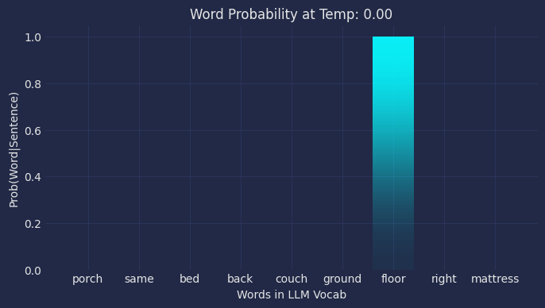
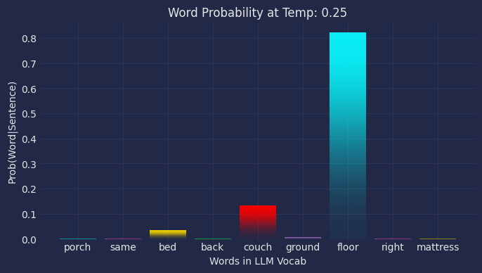
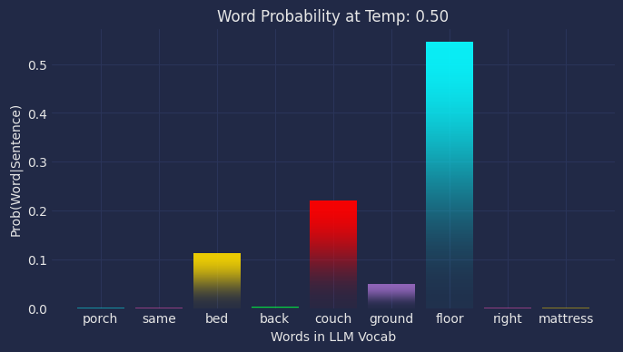
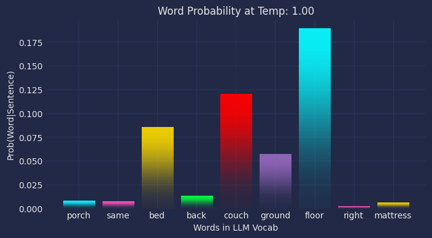
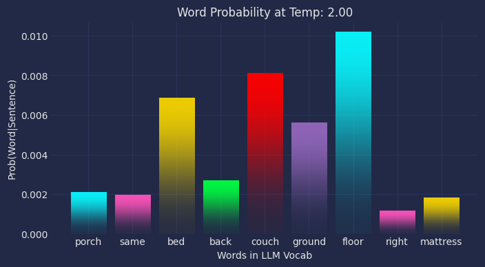
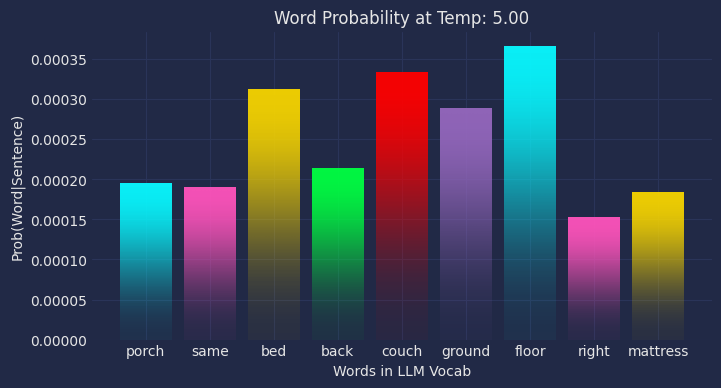
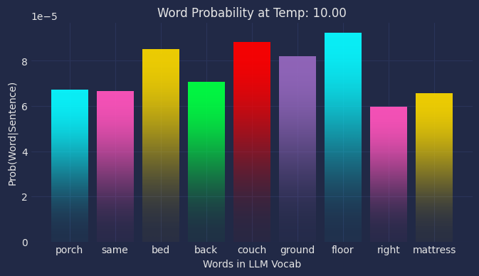
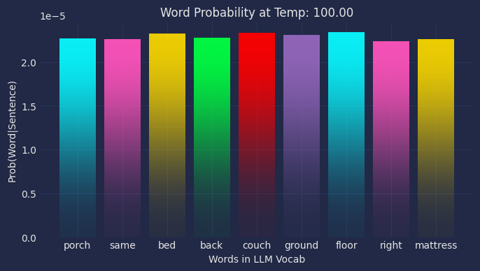
Code
# import torch
# torch.cuda.empty_cache()
# import os
# os.environ["PYTORCH_CUDA_ALLOC_CONF"] = "expandable_segments:True"Code
# import torch
# # Reset max memory allocated
# torch.cuda.reset_max_memory_allocated()
# # Reset max memory cached
# torch.cuda.reset_max_memory_cached()/usr/local/lib/python3.11/dist-packages/torch/cuda/memory.py:343: FutureWarning: torch.cuda.reset_max_memory_allocated now calls torch.cuda.reset_peak_memory_stats, which resets /all/ peak memory stats.
warnings.warn(
/usr/local/lib/python3.11/dist-packages/torch/cuda/memory.py:369: FutureWarning: torch.cuda.reset_max_memory_cached now calls torch.cuda.reset_peak_memory_stats, which resets /all/ peak memory stats.
warnings.warn(Code
# torch.cuda.empty_cache()
# print(torch.cuda.memory_allocated()/1024**2)
# print(torch.cuda.memory_reserved()/1024**2)
# torch.cuda.empty_cache()7288.380859375
7290.0Code
# def empty_cache_on_device(device_id):
# with torch.cuda.device(device_id):
# torch.cuda.empty_cache()
# empty_cache_on_device(0) Code
# import gc
# # Invoke garbage collector
# gc.collect()740Code
#This works for clearing the current GPUs memory
# torch.device("cuda:1")
# torch._C._cuda_clearCublasWorkspaces()
# torch._dynamo.reset()
# import gc
# gc.collect()
# torch.cuda.empty_cache()Code
#Generate LLM pipeline
#Create the generation pipeline
# LLM_generator = pipeline(
# model_to_load_task,
# model = model_to_load,
# tokenizer = tokenizer,
# return_full_text = False,
# max_new_tokens = 500,
# do_sample = False,
# )Hardware accelerator e.g. GPU is available in the environment, but no `device` argument is passed to the `Pipeline` object. Model will be on CPU.Code
# # Prompt
# prompt = "The capital of France is"
# messages = [{"role": "user",
# "content": prompt
# }]
# output = LLM_generator(messages)
# print(output[0]["generated_text"]) The capital of France is Paris.Code
# # Set up and prompt
# prompt = "The capital of France is"
# # Tokenize input prompt
# input_ids = tokenizer(prompt, return_tensors ="pt").input_ids
# #Pass to GPU
# input_ids = input_ids.to("cuda:1")
# # Get the output of the model before the lm_head
# model_output = model.model(input_ids)
# # Get the output of the lm_head
# lm_head_output = model.lm_head(model_output[0])
# token_id = lm_head_output[0,-1].argmax(-1)
# tokenizer.decode(token_id)You are not running the flash-attention implementation, expect numerical differences.'Paris'Code
# prompt = "The sleepy cat slept on the"#"The capital of France is"
# # Tokenize input prompt
# input_ids = tokenizer.encode(prompt, return_tensors ="pt")
# #Pass to GPU
# input_ids = input_ids.to("cuda:1")
# outputs = model.generate(input_ids,
# max_new_tokens=1,
# output_scores=True,
# return_dict_in_generate=True,
# pad_token_id=tokenizer.eos_token_id)
# # Get the generated token ID
# generated_token_id = outputs.sequences[0][-1].item()
# # Decode the generated token ID to a word
# generated_word = tokenizer.decode([generated_token_id])
# print("Generated word:", generated_word)
Generated word: matCode
# import torch.nn.functional as F
# # Assuming you have already imported and set up your tokenizer and model
# prompt = "The cat slept on the"
# # Tokenize input prompt
# input_ids = tokenizer.encode(prompt, return_tensors="pt")
# # Pass to GPU
# input_ids = input_ids.to("cuda:1")
# # Forward pass to get logits for the next token
# with torch.no_grad():
# outputs = model(input_ids)
# logits = outputs.logits
# # Adjust temperature
# temperature = 100.0 # You can change this value to adjust the temperature
# scaled_logits = logits[0, -1, :] / temperature
# # Get the logits for the last token in the input sequence
# last_token_logits = scaled_logits# logits[0, -1, :]
# # Apply softmax to get probabilities
# probabilities = F.softmax(last_token_logits, dim=-1)
# # Get the top 10 probable words
# top_10_probabilities, top_10_indices = torch.topk(probabilities, 10)
# # Decode the top 10 tokens to words
# top_10_words = [tokenizer.decode([idx]) for idx in top_10_indices]
# print(f"The selected word: \n {prompt} {top_10_words[0]}")
# print("Top 10 probable next words:", top_10_words)
# # Print the table
# print("Word\tProbability")
# print("-"*20)
# for word, prob in zip(top_10_words, top_10_probabilities):
# print(f"{word}\t{prob.item():.6f}")
# selected_idx = np.random.choice(top_10_indices.cpu(), p=top_10_probabilities.cpu().numpy()/sum(top_10_probabilities.cpu().numpy()))
# selected_word = tokenizer.decode([selected_idx.item()])
# print("Selected word:", selected_word) The selected word:
The cat slept on the floor
Top 10 probable next words: [' floor', ' couch', ' bed', ' ground', ' sofa', ' side', ' other', ' roof', ' back', ' grass']
Word Probability
--------------------
floor 0.000023
couch 0.000023
bed 0.000023
ground 0.000023
sofa 0.000023
side 0.000023
other 0.000023
roof 0.000023
back 0.000023
grass 0.000023
Selected word: bedCode
# # Get the generated token ID
# generated_token_id = outputs.sequences[0][-1].item()
# # Decode the generated token ID to a word
# generated_word = tokenizer.decode([generated_token_id])
# print("Generated word:", generated_word)AttributeError: 'CausalLMOutputWithPast' object has no attribute 'sequences'Code
# # Assuming you have already imported and set up your tokenizer and model
# prompt = "The cat slept on the"
# # Tokenize input prompt
# input_ids = tokenizer.encode(prompt, return_tensors="pt")
# # Pass to GPU
# input_ids = input_ids.to("cuda:1")
# # Generate the output with adjusted temperature
# outputs = model.generate(input_ids,
# max_new_tokens=1,
# temperature= 2.0, # You can change this value to adjust the temperature
# output_scores=True,
# return_dict_in_generate=True,
# do_sample=True,
# pad_token_id=tokenizer.eos_token_id)
# # Get the generated token ID
# generated_token_id = outputs.sequences[0][-1].item()
# # Decode the generated token ID to a word
# generated_word = tokenizer.decode([generated_token_id])
# print("Generated word:", generated_word)Generated word: grassCode
# probabilities.argmax().item()
# top_10_indices
# outputs.logits[0][0]/100
# top_10_indices
# [tokenizer.decode([idx]).replace(" ", "") for idx in top_10_indices]
# probabilities.sum()
# outputs.past_key_values
# model.config
# words_to_plot =["floor", "bed"]
# for word in words_to_plot:
# print(tokenizer.encode(word, return_tensors="pt"))GPT2Config {
"_name_or_path": "openai-community/gpt2",
"activation_function": "gelu_new",
"architectures": [
"GPT2LMHeadModel"
],
"attn_pdrop": 0.1,
"bos_token_id": 50256,
"embd_pdrop": 0.1,
"eos_token_id": 50256,
"initializer_range": 0.02,
"layer_norm_epsilon": 1e-05,
"model_type": "gpt2",
"n_ctx": 1024,
"n_embd": 768,
"n_head": 12,
"n_inner": null,
"n_layer": 12,
"n_positions": 1024,
"reorder_and_upcast_attn": false,
"resid_pdrop": 0.1,
"scale_attn_by_inverse_layer_idx": false,
"scale_attn_weights": true,
"summary_activation": null,
"summary_first_dropout": 0.1,
"summary_proj_to_labels": true,
"summary_type": "cls_index",
"summary_use_proj": true,
"task_specific_params": {
"text-generation": {
"do_sample": true,
"max_length": 50
}
},
"transformers_version": "4.44.2",
"use_cache": true,
"vocab_size": 50257
}Code
# outputs.logits[0].size()
# print(F.softmax(outputs.logits[0][0]).argmax())
# print(outputs.sequences[0][-1])
# tokenizer.decode(outputs.sequences[0][-1])tensor(4314, device='cuda:1')
tensor(4314, device='cuda:1')/tmp/ipykernel_346/3335326152.py:2: UserWarning: Implicit dimension choice for softmax has been deprecated. Change the call to include dim=X as an argument.
print(F.softmax(outputs.logits[0][0]).argmax())' floor'Code
# F.softmax(outputs.logits[0][0])[43].item()/tmp/ipykernel_346/2671969968.py:1: UserWarning: Implicit dimension choice for softmax has been deprecated. Change the call to include dim=X as an argument.
F.softmax(outputs.logits[0][0])[43].item()6.473852920407808e-08Code
#JUNK
import latexify
import numpy as np
@latexify.function(align=True) # Enable alignment
def generate_softmax_steps(x: list) -> str:
"""Generate steps for computing softmax of array x with centered alignment."""
n = len(x)
# Build aligned equation string using LaTeX align environment
equations = [
# "\\begin{align}\n",
# Step 1: Input array
f"x &= [{', '.join(str(i) for i in x)}] \\\\",
# Step 2: Exponentials
f"e^x &= [{', '.join(f'e^{{{i}}}' for i in x)}] \\\\",
# Step 3: Sum of exponentials
f"\\sum e^x &= {' + '.join(f'e^{{{i}}}' for i in x)} \\\\",
# Step 4: Softmax formula with aligned fractions
"\\text{softmax}(x) &= \\left[" +
", ".join([f"\\frac{{e^{{{x[i]}}}}}{{e^{{{x[0]}}} + e^{{{x[1]}}} + e^{{{x[2]}}}}}"
for i in range(n)]) + "\\right] \\\\",
# Step 5: Numerical results
f"&= [{', '.join(f'{v:.4f}' for v in np.exp(x) / np.sum(np.exp(x)))}]",
# "\n\\end{align}"
]
# Join all equations with proper spacing
return "\\begin{align}\n" + "\n".join(equations) + "\n\\end{align}" #"\n".join(equations)
# Generate and print the aligned equations
x = [1, 2, 3]
display(Math(generate_softmax_steps(x)))Code
import latexify
import numpy as np
from IPython.display import display, Math
def display_step(step_num: int, description: str, equation: str):
"""Helper function to display each step with a description"""
print(f"\nStep {step_num}: {description}")
display(Math(equation))
def generate_softmax_steps_with_temp(x: list, T: float, precision: int = 4) -> None:
"""
Generate and display steps for computing softmax with temperature T in red.
Args:
x: input array
T: temperature parameter
precision: number of decimal places to show in calculations
"""
n = len(x)
# Define LaTeX color command
red_T = r"\color{red}" + str(T)
# Calculate actual values for displaying numeric results
exp_values = np.exp(np.array(x)/T)
sum_exp = np.sum(exp_values)
softmax_values = exp_values / sum_exp
# Create denominator sum once for reuse
denominator_terms = [f"e^{{{x[j]}/{red_T}}} ({exp_values[j]:.{precision}f})" for j in range(n)]
denominator = " + ".join(denominator_terms)
# Step 1: Input array and temperature
display_step(1, "Input array",
f"x = [{', '.join(str(i) for i in x)}]")
display_step(1.1, "Temperature parameter",
f"{red_T} = {T}")
# Step 2: Exponentials with temperature and their values
exp_equation = r"e^{x/" + f"{red_T}" + r"} = \left[" + \
', '.join(f"e^{{{i}/{red_T}}} ({v:.{precision}f})"
for i, v in zip(x, exp_values)) + r"\right]"
display_step(2, "Calculate exponentials with temperature", exp_equation)
# Step 3: Sum of exponentials with temperature and result
sum_equation = r"\sum e^{x/" + f"{red_T}" + r"} = " + \
' + '.join(f"e^{{{i}/{red_T}}} ({v:.{precision}f})"
for i, v in zip(x, exp_values)) + \
f" = {sum_exp:.{precision}f}"
display_step(3, "Sum of exponentials", sum_equation)
# Step 4: Softmax formula with temperature
softmax_equation = r"\text{softmax}(x, " + f"{red_T}" + r") = \left[" + \
", ".join([f"\\frac{{e^{{{x[i]}/{red_T}}} ({exp_values[i]:.{precision}f})}}{{" +
denominator + "}}" for i in range(n)]) + r"\right]"
display_step(4, "Complete softmax formula", softmax_equation)
# Step 5: Numerical results
final_result = f"[{', '.join(f'{v:.{precision}f}' for v in softmax_values)}]"
display_step(5, "Final numerical results", final_result)
# Example usage with different parameters
x = [1, 2, 3]
print("Standard temperature (T=1) with default precision:")
generate_softmax_steps_with_temp(x, T=1)
print("\n" + "="*50 + "\n")
print("Higher temperature (T=2) with 2 decimal places:")
generate_softmax_steps_with_temp(x, T=2, precision=2)
print("\n" + "="*50 + "\n")
print("Lower temperature (T=0.5) with 6 decimal places:")
generate_softmax_steps_with_temp(x, T=0.5, precision=6)Part A
Calculations
\[ \begin{align*} \mathbf{Softmax}(x_i) & = \frac{ \textcolor{steelblue}{ e^{x_i} } }{ \textcolor{purple}{ \sum_{j=1}^{N} e^{x_j} } } \\ \end{align*} \]
Calculate the denominator using all the \(list\) items
\[ \begin{align*} \textcolor{purple}{ D } := \textcolor{purple}{ \sum_{j=1}^{N} e^{x_j} } & = \textcolor{purple}{ \sum_{j=1}^{N = 3} e^{x_j} }\\ & = \textcolor{purple}{ e^{x_1} + e^{x_2} + e^{x_3} }\\ & = \textcolor{purple}{ e^{1} + e^{2} + e^{3} }\\ & = \textcolor{purple}{ 2.718 + 7.389 + 20.086 }\\ \textcolor{purple}{ D } & = \textcolor{purple}{ 30.193 }\\ \end{align*} \]
Now do the full calculation for each of the \(list\) items \(x_{i=1:3}\)
\[ \begin{align*} \mathbf{Softmax}(x_{i=1:3}) & := \frac{ \textcolor{steelblue}{ e^{x_i} } }{ \textcolor{purple}{ \sum_{j=1}^{N} e^{x_j} } } := \frac{ \textcolor{steelblue}{ e^{x_i} } }{ \textcolor{purple}{ D } } \\ \\ & = \frac{ \textcolor{steelblue}{e^{x_1}} }{\textcolor{purple}{D}} , \frac{ \textcolor{steelblue}{e^{x_2}} }{\textcolor{purple}{D}} , \frac{ \textcolor{steelblue}{e^{x_3}} }{\textcolor{purple}{D}} ,\\ \\ & = \frac{ \textcolor{steelblue}{e^{1}} }{\textcolor{purple}{D}} , \frac{ \textcolor{steelblue}{e^{2}} }{\textcolor{purple}{D}} , \frac{ \textcolor{steelblue}{e^{3}} }{\textcolor{purple}{D}} , \\ \\ & = \frac{ \textcolor{steelblue}{ 2.718 } }{\textcolor{purple}{D}} , \frac{ \textcolor{steelblue}{ 7.389 } }{\textcolor{purple}{D}} , \frac{ \textcolor{steelblue}{ 20.086} }{\textcolor{purple}{D}} , \\ \\ & = \frac{ \textcolor{steelblue}{ 2.718 } }{\textcolor{purple}{ 30.193 }}, \frac{ \textcolor{steelblue}{ 7.389 } }{\textcolor{purple}{ 30.193 }}, \frac{ \textcolor{steelblue}{ 20.086} }{\textcolor{purple}{ 30.193 }}, \\ \\ & = 0.090, 0.245, 0.665 \\ \\ Probabilities & = [0.090, 0.245, 0.665] \\ \\ \end{align*} \]
Temperature:0.5
\[ \begin{align*} \mathbf{Softmax}(x_i) & = \frac{ \textcolor{steelblue}{ e^{ \frac{x_i}{\textcolor{red}{T}} } } } { \textcolor{purple}{ \sum_{j=1}^{N} e^{\frac{x_j}{\textcolor{red}{T} } } } } \\ \end{align*} \]
Calculate the denominator using all the \(list\) items and \(Temperature(T) = 0.5\)
\[ \begin{align*} \textcolor{purple}{ D } := \textcolor{purple}{ \sum_{j=1}^{N} e^{\frac{x_j}{\textcolor{red}{T} }} } & = \textcolor{purple}{ \sum_{j=1}^{N = 3} e^{\frac{x_j}{\textcolor{red}{T} }} }\\ & = \textcolor{purple}{ e^{ \frac{x_1}{ \textcolor{red}{T} } } + e^{ \frac{x_2}{ \textcolor{red}{T} } } + e^{ \frac{x_3}{ \textcolor{red}{T} } } }\\ & = \textcolor{purple}{ e^{ \frac{1}{ \textcolor{red}{0.5} } } + e^{ \frac{2}{ \textcolor{red}{0.5} } } + e^{ \frac{3}{ \textcolor{red}{0.5} } } }\\ & = \textcolor{purple}{ e^{ 2 } + e^{ 4 } + e^{ 6 } }\\ & = \textcolor{purple}{ 7.389 + 54.598 + 403.429}\\ \textcolor{purple}{ D } & = \textcolor{purple}{ 465.416 }\\ \end{align*} \]
Now do the full calculation for each of the \(list\) items \(x_{i=1:3}\)
\[ \begin{align*} \mathbf{Softmax}(x_{i=1:3}) & := \frac{ \textcolor{steelblue}{ e^{ \frac{x_i}{\textcolor{red}{T}} } } }{ \textcolor{purple}{ \sum_{j=1}^{N} e^{ \frac{x_j}{\textcolor{red}{T} } } } } := \frac{ e^{\frac{x_j}{\textcolor{red}{T} }} } { \textcolor{purple}{ D } } \\ \\ & = \frac{ \textcolor{steelblue}{e^{ \frac{x_1}{\textcolor{red}{T}} }} }{\textcolor{purple}{D}} , \frac{ \textcolor{steelblue}{e^{ \frac{x_2}{\textcolor{red}{T}} }} }{\textcolor{purple}{D}} , \frac{ \textcolor{steelblue}{e^{ \frac{x_3}{\textcolor{red}{T}} }} }{\textcolor{purple}{D}} ,\\ \\ & = \frac{ \textcolor{steelblue}{e^{ \frac{1}{\textcolor{red}{0.5}} }} }{\textcolor{purple}{D}} , \frac{ \textcolor{steelblue}{e^{ \frac{2}{\textcolor{red}{0.5}} }} }{\textcolor{purple}{D}} , \frac{ \textcolor{steelblue}{e^{ \frac{3}{\textcolor{red}{0.5}} }} }{\textcolor{purple}{D}} , \\ \\ & = \frac{ \textcolor{steelblue}{ 2.718 } }{\textcolor{purple}{D}} , \frac{ \textcolor{steelblue}{ 7.389 } }{\textcolor{purple}{D}} , \frac{ \textcolor{steelblue}{ 20.086} }{\textcolor{purple}{D}} , \\ \\ & = \frac{ \textcolor{steelblue}{ 2.718 } }{\textcolor{purple}{ 30.193 }}, \frac{ \textcolor{steelblue}{ 7.389 } }{\textcolor{purple}{ 30.193 }}, \frac{ \textcolor{steelblue}{ 20.086} }{\textcolor{purple}{ 30.193 }}, \\ \\ & = 0.090, 0.245, 0.665 \\ \\ Probabilities & = [0.090, 0.245, 0.665] \\ \\ \end{align*} \]
Code
#Print calculations
e = np.exp(np.divide(list_in,Temp))
#out=display(Math(r"\\e^{x_i}:\\"))
#print(f"{out}" + f"{e}")
#display(Math(r"\sum_{j=1}^{N=" + f"{len(list_in)}" + r"} e^{x_j/" + f"{Temp}"+ "}"))
#print(e.sum())Example 2 - LLM Output Softmax Transformation
Example
Given a list of logit outputs from a LLM, find the most probable word and its probability.
Assume the that LLM only knows 5 words (LLM vocabularies typically contain thousands of words).
- \(index = [0, 1, 2, 3, 4]\)
- \(words = [ceiling, floor, mat, car, grass]\)
- \(logits = [-49.82, -46.40, -45.25, -47.30, -48.32]\)
Calculations \[
\begin{align*}
\mathbf{Softmax}(x_i) & = \frac{ \textcolor{steelblue}{ e^{x_i} } }{ \textcolor{purple}{ \sum_{j=1}^{N} e^{x_j} } } \\
\end{align*}
\]
Calculate the denominator using all the \(logits\)
\[ \begin{align*} \textcolor{purple}{ D } := \textcolor{purple}{ \sum_{j=1}^{N} e^{x_j} } & = \textcolor{purple}{ \sum_{j=1}^{N = 5} e^{x_j} }\\ & = \textcolor{purple}{ e^{x_1} + e^{x_2} + e^{x_3} + e^{x_4} + e^{x_5} }\\ & = \textcolor{purple}{ e^{-49.82} + e^{-46.40} + e^{-45.25} + e^{-47.30} + e^{-48.32} }\\ & = \textcolor{purple}{ 2.309 * 10^{-22} + 7.059 * 10^{-21} + 2.229 * 10^{-20} + 2.870 * 10^{-21} + 1.035 * 10^{-21} }\\ \textcolor{purple}{ D } & = \textcolor{purple}{ 3.349* 10^{-20} }\\ \end{align*} \]
Now do the full calculation for each of the \(logits\) \(x_{i=1:5}\)
\[ \begin{align*} \mathbf{Softmax}(x_{i=1:5}) & := \frac{ \textcolor{steelblue}{ e^{x_i} } }{ \textcolor{purple}{ \sum_{j=1}^{N} e^{x_j} } } := \frac{ \textcolor{steelblue}{ e^{x_i} } }{ \textcolor{purple}{ D } } \\ \\ & = \frac{ \textcolor{steelblue}{e^{x_1}} }{\textcolor{purple}{D}} , \frac{ \textcolor{steelblue}{e^{x_2}} }{\textcolor{purple}{D}} , \frac{ \textcolor{steelblue}{e^{x_3}} }{\textcolor{purple}{D}} , \frac{ \textcolor{steelblue}{e^{x_4}} }{\textcolor{purple}{D}} , \frac{ \textcolor{steelblue}{e^{x_5}} }{\textcolor{purple}{D}}\\ \\ & = \frac{ \textcolor{steelblue}{e^{-49.82}} }{\textcolor{purple}{D}} , \frac{ \textcolor{steelblue}{e^{-46.40}} }{\textcolor{purple}{D}} , \frac{ \textcolor{steelblue}{e^{-45.25}} }{\textcolor{purple}{D}} , \frac{ \textcolor{steelblue}{e^{-47.30}} }{\textcolor{purple}{D}} , \frac{ \textcolor{steelblue}{e^{-48.32}} }{\textcolor{purple}{D}} \\ \\ & = \frac{ \textcolor{steelblue}{ 2.309 * 10^{-22} } }{\textcolor{purple}{D}} , \frac{ \textcolor{steelblue}{ 7.059 * 10^{-21}} }{\textcolor{purple}{D}} , \frac{ \textcolor{steelblue}{ 2.229 * 10^{-20}} }{\textcolor{purple}{D}} , \frac{ \textcolor{steelblue}{ 2.870 * 10^{-21}} }{\textcolor{purple}{D}} , \frac{ \textcolor{steelblue}{ 1.035 * 10^{-21}} }{\textcolor{purple}{D}} \\ \\ & = \frac{ \textcolor{steelblue}{ 2.309 * 10^{-22} } }{\textcolor{purple}{ 3.349* 10^{-20} }}, \frac{ \textcolor{steelblue}{ 7.059 * 10^{-21}} }{\textcolor{purple}{ 3.349* 10^{-20} }}, \frac{ \textcolor{steelblue}{ 2.229 * 10^{-20}} }{\textcolor{purple}{ 3.349* 10^{-20} }}, \frac{ \textcolor{steelblue}{ 2.870 * 10^{-21}} }{\textcolor{purple}{ 3.349* 10^{-20} }}, \frac{ \textcolor{steelblue}{ 1.035 * 10^{-21}} }{\textcolor{purple}{ 3.349* 10^{-20} }} \\ \\ & = 0.007, 0.211, 0.666, 0.086, 0.031 \\ \\ Probabilities & = [0.007, 0.211, \textcolor{green}{0.666}, 0.086, 0.031] \\ \\ argmax(Probabilities_{1:5}) & = 3 (Index:2) \end{align*} \]
The third element (index 2 in \(Probabilities\)) of the softmax probabilities is the largest (\(\textcolor{green}{0.666}\)), indicating that the word \(\textcolor{green}{mat}\) (index 2 in \(words\) array) is the most probable next word.